1 · Identity
| case | case_AM_five_page_cascading_furniture | kind | real |
|---|---|---|---|
| input folder | C:\Users\yoav\devel\applitools\bin\tests\images\PDFs\real\edited\case_AM_five_page_cascading_furniture | ||
| output folder | C:\Users\yoav\testres\pdf\e2e_261006\case_AM_five_page_cascading_furniture_20261006-135348-2d65f9 | ||
| source | v1.pdf | ||
| render DPI | 96.0 | units | px |
| baseline (v1) | 816×1056 px, axTree=True | checkpoint (v2) | 816×1056 px, axTree=True |
| pipeline commit | ec8da6889 | ||
2 · Ground truth
| type | granularity | v1 page | description | expected region |
|---|---|---|---|---|
| insert | paragraph | 1 | Inserted a paragraph (about 7 lines) on why the town keeps its own archive, after the founding paragraph. This is the cascade driver: everything below it moves down, and the tail of page 1 crosses onto page 2. | page 1, from the fourth paragraph down counting the title line (the insert follows the second body paragraph) -- the inserted paragraph and everything it pushes; the last lines of v1 page 1 open v2 page 2 |
| replace | sentence | 2 | Grew the scope-notes paragraph by two sentences (about 3 lines) on recording the box's physical state. Adds to the cascade inherited from page 1. | page 2, third paragraph -- the paragraph grows by several lines and everything below it moves further down, on top of the shift inherited from page 1 |
| insert | paragraph | 3 | Inserted a paragraph (about 7 lines) on the items the standard box cannot hold, after the photographs paragraph. Adds to the cascade rather than offsetting it. | page 3, from the fourth paragraph down -- the inserted paragraph and everything it pushes, on top of the shift inherited from pages 1-2 |
| replace | sentence | 4 | Shrank the requests paragraph by about two rendered lines: the three-box rule and the photography rule folded into one short sentence. The accumulated shift turns back down here. | page 4, third paragraph -- the paragraph loses two lines and everything below it moves up relative to the inherited shift, which stays downward overall |
| delete | paragraph | 5 | Deleted the short paragraph on volunteers' own photographs in full. | page 5, third paragraph -- the removed paragraph; the paragraphs below it move up by its height but still sit lower than in v1, and the tail of the page spills onto the new page 6 |
provenance.md
Provenance — case_AM_five_page_cascading_furniture
Real-PDF labelled pair (Story 1.13). v2.pdf was produced by an external
editor and is frozen; this harness applies no edits of its own.
Pair
- v1 (baseline):
v1.pdf - v2 (checkpoint):
v2.pdf - Alignment + edits GT source: case_AM_five_page_cascading_furniture.json
v2 authoring — TODO (author fills)
- Editor / tool + version: _TODO (e.g. Acrobat Pro 2024.x / pikepdf 9.x / Word re-export)_
- v1 source distribution / origin: _TODO_
Producers (harness-stamped)
- AXTree extractor:
@applitools/ax-tree@1.6.4viaextract-axtree/extract.mjs(toJSON verbatim, Variant A camelCase) - Rasterizer:
pypdfium2==(see requirements.txt)viarasterize.pyat 96 DPI
Determinism (NFR5)
Both producers are deterministic on frozen PDFs. The only non-determinism is
inside the external @applitools/ax-tree extractor (out of our control); the
harness itself adds no timestamps/RNG.
3 · Algorithm
| matcher | Strict |
|---|---|
| dynamic | Dynamic mode: ON |
| overflow settings | vTol=2 · hTol=2 · maxVSearch=200 · minNbrText=3 · aggregateRawDiffs=True |
4 · Page alignment
5 v1 pages · 6 v2 pages · 5 matched pairs · inserted (v2-only): [5] · deleted (v1-only): []
| pair | pages | disposition | classified diffs |
|---|---|---|---|
| 0 | v1 p0 ↔ v2 p0 | modified | 38 |
| 1 | v1 p1 ↔ v2 p1 | modified | 71 |
| 2 | v1 p2 ↔ v2 p2 | modified | 55 |
| 3 | v1 p3 ↔ v2 p3 | modified | 51 |
| 4 | v1 p4 ↔ v2 p4 | modified | 52 |
alignment summary
case: case_AM_five_page_cascading_furniture v1 pages: 5 v2 pages: 6 matched pairs: 5 v1-only (deleted): [] v2-only (inserted): [5] total classified page diffs (over matched pairs): 267 alerting (real diff): 11 [Changed/Inserted/Deleted/Modified — IsAlerting()] dynamic content: 0 [reported, never alerts] document furniture: 5 [reported, never alerts] content shift (overflow): 33 [crossed a page boundary; user confirms] displacement (filtered): 218 [same-page move; not surfaced] dynamic: ON (--no-dynamic to disable) pair v1#0 <-> v2#0: 1630 raw -> 42 aggregated -> 38 classified (pair-00-v1p0-v2p0/: matcher/ raw, overflow/ classified+aggregation) pair v1#1 <-> v2#1: 1633 raw -> 65 aggregated -> 71 classified (pair-01-v1p1-v2p1/: matcher/ raw, overflow/ classified+aggregation) pair v1#2 <-> v2#2: 2877 raw -> 63 aggregated -> 55 classified (pair-02-v1p2-v2p2/: matcher/ raw, overflow/ classified+aggregation) pair v1#3 <-> v2#3: 2444 raw -> 60 aggregated -> 51 classified (pair-03-v1p3-v2p3/: matcher/ raw, overflow/ classified+aggregation) pair v1#4 <-> v2#4: 441 raw -> 44 aggregated -> 52 classified (pair-04-v1p4-v2p4/: matcher/ raw, overflow/ classified+aggregation) inserted v2#5 -> structural/inserted-v2-005.png
timeline
- MODIFIED v1#0 <-> v2#0 (modified)
- MODIFIED v1#1 <-> v2#1 (modified)
- MODIFIED v1#2 <-> v2#2 (modified)
- MODIFIED v1#3 <-> v2#3 (modified)
- MODIFIED v1#4 <-> v2#4 (modified)
- INSERTED v2#5 (v2-only)
Page cells show the overlay visualization (diff/displacement annotations) where available; raw renders otherwise.
overlay legend


5 · Result summary
Emitted records aggregated across 5 pair(s). Pruned records excluded (see Diagnostics).
by DiffCause
by frame
by mechanism
6 · Per-pair detail
Pair 0 v1 p0 ↔ v2 p0 DisplacedDown 33Furniture 1Inserted 1OverflowToNext 3
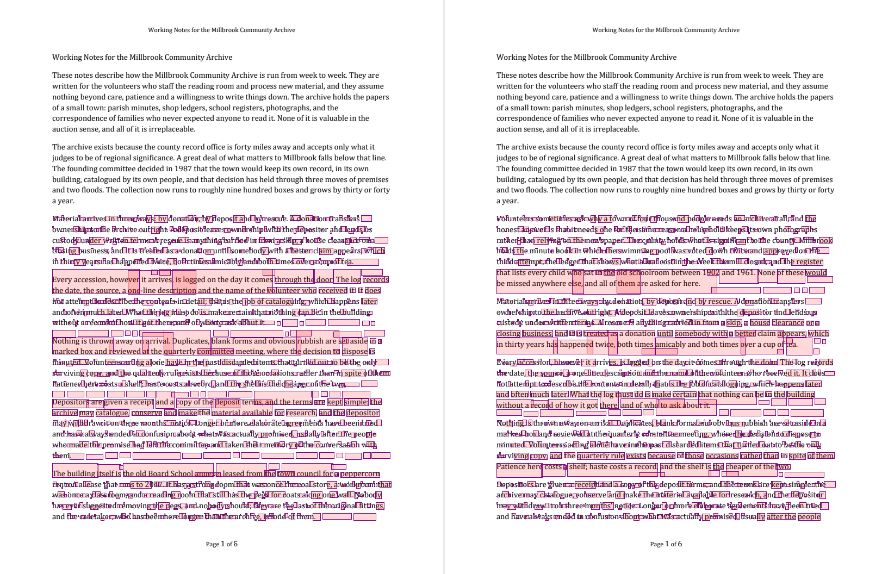
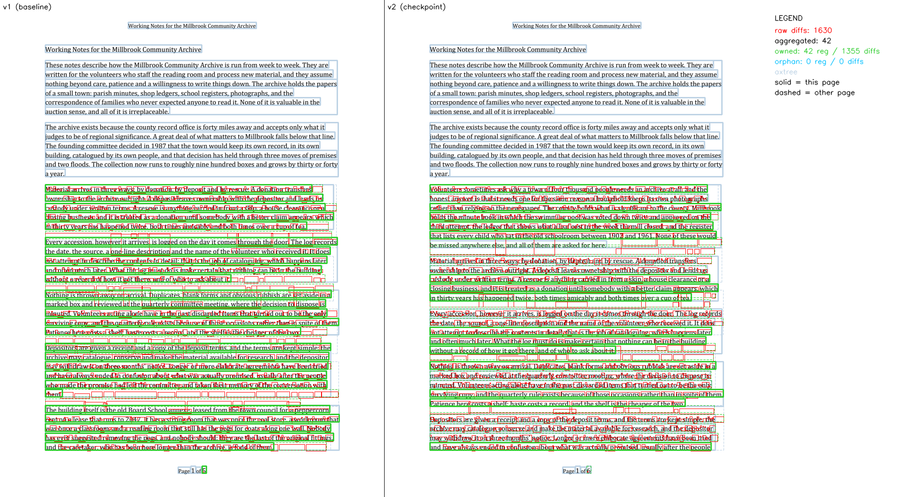
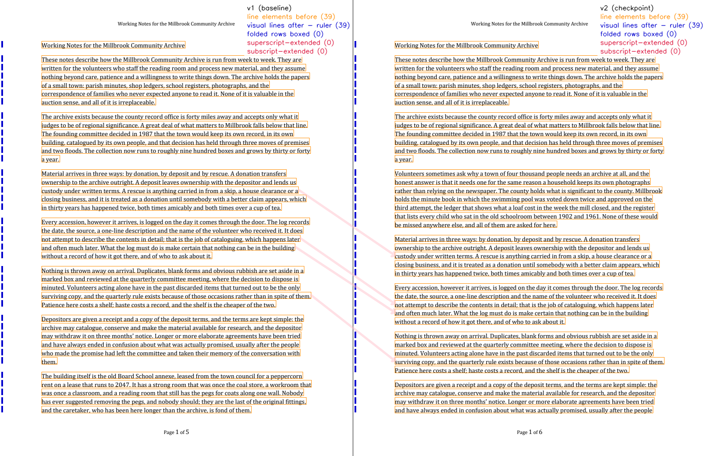
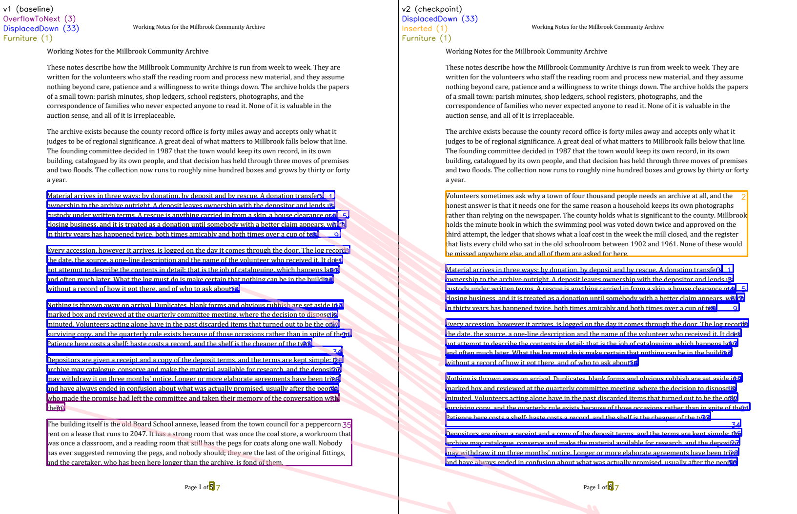
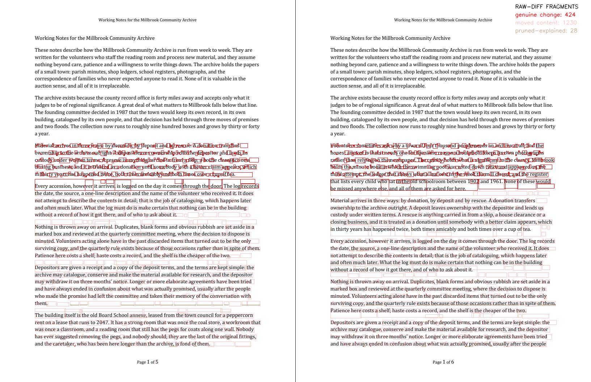
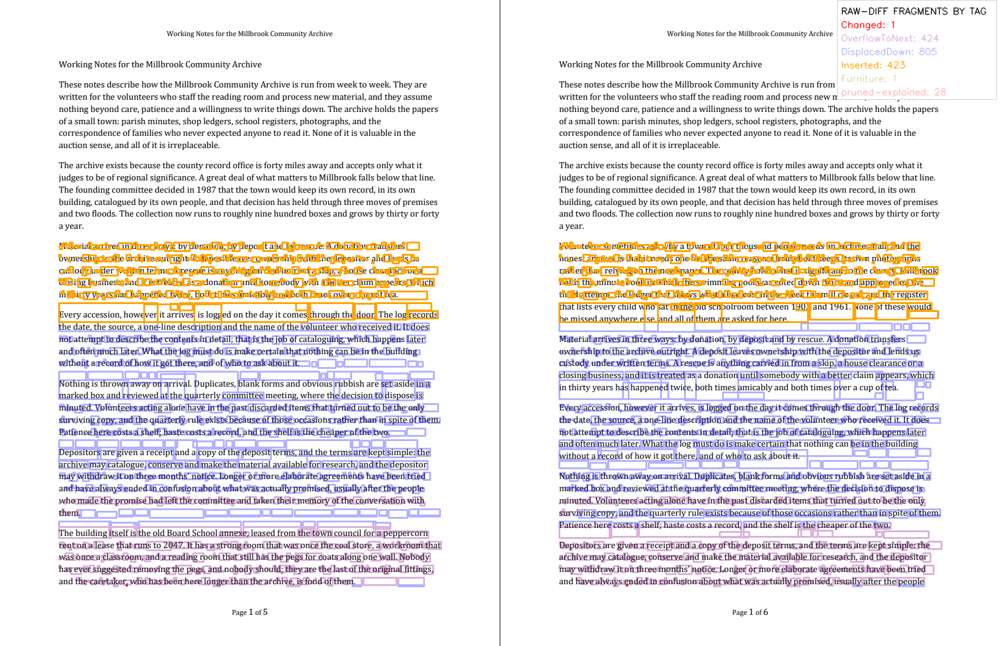
fragment-tags.png verified against fragments.json (1682 fragments; border colour checked on 776 fragment-sides (2588 not checkable: overlapped by other borders))
38 emitted · 24 pruned · raw=1630 · aggregated=42
Verified against the returned PageMatchResult: 38 returned PageDiffs, 38 table rows marked V.
Verification passed: every returned PageDiff is in the table and every non-returned row is pruned.
| ret | id | parent | block | tag | mechanism | frame | baseline rect (v1) | checkpoint rect (v2) | approved off | pruned |
|---|---|---|---|---|---|---|---|---|---|---|
| V | 1672 | 1630 | 0 | DisplacedDown | M1Line | baseline | 96,392 566×16 | 96,543 566×16 | (0, 151) | no |
| V | 1673 | 1631 | 1 | DisplacedDown | M1Line | baseline | 96,392 589×16 | 96,543 589×16 | (0, 151) | no |
| V | 1674 | 1630 | 2 | Inserted | None | checkpoint | — | 96,392 618×134 | — | no |
| V | 1675 | 1632 | 3 | DisplacedDown | M1Line | baseline | 96,412 589×15 | 96,563 589×15 | (0, 151) | no |
| V | 1676 | 1633 | 4 | DisplacedDown | M1Block | baseline | 96,432 594×15 | 96,582 594×15 | (0, 150) | no |
| V | 1677 | 1634 | 5 | DisplacedDown | M1Block | baseline | 96,432 618×15 | 96,582 618×15 | (0, 150) | no |
| V | 1678 | 1635 | 6 | DisplacedDown | M1Line | baseline | 96,451 596×16 | 96,602 596×16 | (0, 151) | no |
| V | 1679 | 1636 | 7 | DisplacedDown | M1Line | baseline | 96,451 612×16 | 96,602 612×16 | (0, 151) | no |
| V | 1680 | 1637 | 8 | DisplacedDown | M1Line | baseline | 96,471 555×16 | 96,622 555×16 | (0, 151) | no |
| V | 1681 | 1638 | 9 | DisplacedDown | M1Line | baseline | 96,471 601×16 | 96,622 601×16 | (0, 151) | no |
| V | 1682 | 1640 | 10 | DisplacedDown | M1Line | baseline | 96,504 620×16 | 96,655 620×16 | (0, 151) | no |
| V | 1683 | 1641 | 11 | DisplacedDown | M1Line | baseline | 96,524 605×16 | 96,675 605×16 | (0, 151) | no |
| V | 1684 | 1642 | 12 | DisplacedDown | M1Line | baseline | 96,544 598×15 | 96,695 598×15 | (0, 151) | no |
| V | 1685 | 1643 | 13 | DisplacedDown | M1Block | baseline | 96,564 586×15 | 96,714 586×15 | (0, 150) | no |
| V | 1686 | 1644 | 14 | DisplacedDown | M1Line | baseline | 96,583 394×16 | 96,734 394×16 | (0, 151) | no |
| V | 1687 | 1645 | 15 | DisplacedDown | M1Block | baseline | 96,433 594×16 | 96,583 594×16 | (0, 150) | no |
| V | 1688 | 1646 | 16 | DisplacedDown | M1Line | baseline | 96,452 612×16 | 96,603 612×16 | (0, 151) | no |
| V | 1689 | 1647 | 17 | DisplacedDown | M1Block | baseline | 96,616 607×16 | 96,766 607×16 | (0, 150) | no |
| V | 1690 | 1648 | 18 | DisplacedDown | M1Line | baseline | 96,472 555×16 | 96,623 555×16 | (0, 151) | no |
| V | 1691 | 1649 | 19 | DisplacedDown | M1Line | baseline | 96,636 595×16 | 96,787 595×16 | (0, 151) | no |
| V | 1692 | 1650 | 20 | DisplacedDown | M1Line | baseline | 96,656 598×16 | 96,807 598×16 | (0, 151) | no |
| V | 1693 | 1651 | 21 | DisplacedDown | M1Line | baseline | 96,676 623×15 | 96,827 623×15 | (0, 151) | no |
| V | 1694 | 1652 | 22 | DisplacedDown | M1Line | baseline | 96,695 542×16 | 96,846 542×16 | (0, 151) | no |
| V | 1695 | 1653 | 23 | DisplacedDown | M1Line | baseline | 96,544 598×16 | 96,695 598×16 | (0, 151) | no |
| V | 1696 | 1654 | 24 | DisplacedDown | M1Block | baseline | 96,565 586×16 | 96,715 586×16 | (0, 150) | no |
| V | 1697 | 1655 | 25 | DisplacedDown | M1Line | baseline | 96,729 606×15 | 96,880 606×15 | (0, 151) | no |
| V | 1698 | 1656 | 26 | DisplacedDown | M1Line | baseline | 96,584 394×16 | 96,735 394×16 | (0, 151) | no |
| V | 1699 | 1657 | 27 | DisplacedDown | M1Block | baseline | 96,748 602×16 | 96,898 602×16 | (0, 150) | no |
| V | 1700 | 1658 | 28 | DisplacedDown | M1Line | baseline | 96,768 600×16 | 96,919 600×16 | (0, 151) | no |
| V | 1701 | 1659 | 29 | DisplacedDown | M1Block | baseline | 96,618 607×16 | 96,768 607×16 | (0, 150) | no |
| V | 1702 | 1660 | 30 | DisplacedDown | M1Line | baseline | 96,788 597×16 | 96,939 597×16 | (0, 151) | no |
| V | 1703 | 1661 | 31 | OverflowToNext | None | baseline | 96,808 598×16 | — | — | no |
| V | 1704 | 1662 | 32 | OverflowToNext | None | baseline | 96,827 36×16 | — | — | no |
| V | 1705 | 1664 | 33 | DisplacedDown | M1Line | baseline | 96,696 542×16 | 96,847 542×16 | (0, 151) | no |
| V | 1706 | 1665 | 34 | DisplacedDown | M1Block | baseline | 96,711 604×15 | 96,861 604×15 | (0, 150) | no |
| V | 1707 | 1664 | 35 | OverflowToNext | Band | baseline | 96,861 624×95 | — | — | no |
| V | 1708 | 1670 | 36 | DisplacedDown | M1Block | baseline | 96,789 597×16 | 96,940 597×16 | (0, 151) | no |
| V | 1709 | 1671 | 37 | Furniture | None | both | 429,990 9×15 | 429,990 9×15 | — | no |
| X | 1710 | 1639 | -1 | Changed | None | both | 96,491 608×13 | 96,491 608×13 | — | yes displacement-covered |
| X | 1711 | 1639 | -1 | Inserted | None | checkpoint | — | 96,504 608×3 | — | yes nested-grain |
| X | 1712 | 1661 | -1 | DisplacedDown | M3ScoredBand | baseline | 96,808 598×16 | 96,960 598×16 | (0, 152) | yes overflow-covered |
| X | 1713 | 1662 | -1 | DisplacedDown | M3ScoredBand | baseline | 96,827 36×16 | 96,979 36×16 | (0, 152) | yes overflow-covered |
| X | 1714 | 1663 | -1 | DisplacedDown | M1Line | baseline | 96,676 623×16 | 96,827 623×16 | (0, 151) | yes overflow-covered |
| X | 1715 | 1666 | -1 | OverflowToNext | Band | baseline | 96,880 624×16 | — | — | yes crossing-evicted |
| X | 1716 | 1667 | -1 | OverflowToNext | Band | baseline | 96,900 606×16 | — | — | yes crossing-evicted |
| X | 1717 | 1668 | -1 | OverflowToNext | Band | baseline | 96,920 612×16 | — | — | yes crossing-evicted |
| X | 1718 | 1669 | -1 | OverflowToNext | Band | baseline | 96,940 485×16 | — | — | yes crossing-evicted |
| X | 1719 | 1661 | -1 | Changed | M3ScoredBand | both | 96,808 27×16 | 96,808 27×16 | — | yes crossing-covered |
| X | 1720 | 1661 | -1 | Changed | M3ScoredBand | both | 127,808 34×16 | 127,808 34×16 | — | yes crossing-covered |
| X | 1721 | 1661 | -1 | Changed | M3ScoredBand | both | 188,808 51×16 | 188,808 51×16 | — | yes crossing-covered |
| X | 1722 | 1661 | -1 | Changed | M3ScoredBand | both | 243,808 23×16 | 243,808 23×16 | — | yes crossing-covered |
| X | 1723 | 1661 | -1 | Changed | M3ScoredBand | both | 270,808 20×16 | 270,808 20×16 | — | yes crossing-covered |
| X | 1724 | 1661 | -1 | Changed | M3ScoredBand | both | 293,808 20×16 | 293,808 20×16 | — | yes crossing-covered |
| X | 1725 | 1661 | -1 | Changed | M3ScoredBand | both | 317,808 66×16 | 317,808 66×16 | — | yes crossing-covered |
| X | 1726 | 1661 | -1 | Changed | M3ScoredBand | both | 387,808 23×16 | 387,808 23×16 | — | yes crossing-covered |
| X | 1727 | 1661 | -1 | Changed | M3ScoredBand | both | 414,808 34×16 | 414,808 34×16 | — | yes crossing-covered |
| X | 1728 | 1661 | -1 | Changed | M3ScoredBand | both | 452,808 31×16 | 452,808 31×16 | — | yes crossing-covered |
| X | 1729 | 1661 | -1 | Changed | M3ScoredBand | both | 486,808 53×16 | 486,808 53×16 | — | yes crossing-covered |
| X | 1730 | 1661 | -1 | Changed | M3ScoredBand | both | 542,808 35×16 | 542,808 35×16 | — | yes crossing-covered |
| X | 1731 | 1661 | -1 | Changed | M3ScoredBand | both | 581,808 80×16 | 581,808 80×16 | — | yes crossing-covered |
| X | 1732 | 1661 | -1 | Changed | M3ScoredBand | both | 665,808 29×16 | 665,808 29×16 | — | yes crossing-covered |
| X | 1733 | 1661 | -1 | Changed | M3ScoredBand | both | 96,827 36×16 | 96,827 36×16 | — | yes crossing-covered |
Pair 1 v1 p1 ↔ v2 p1 Changed 1DisplacedDown 59Furniture 1Inserted 3Modified 1OverflowFromPrev 2OverflowToNext 4
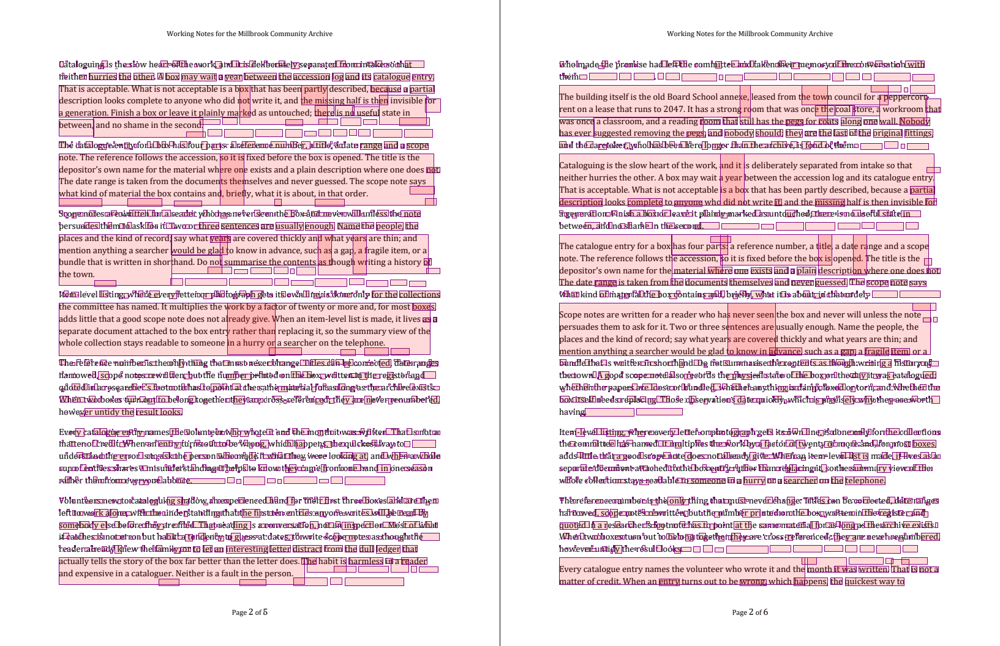
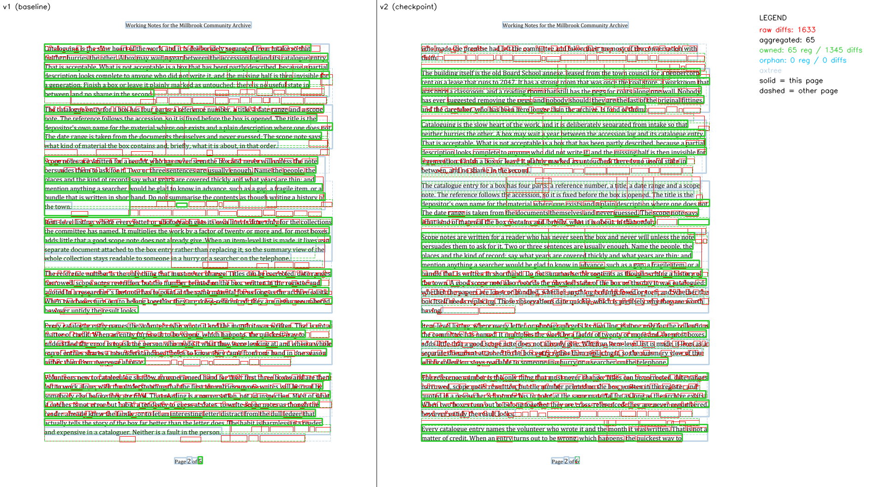
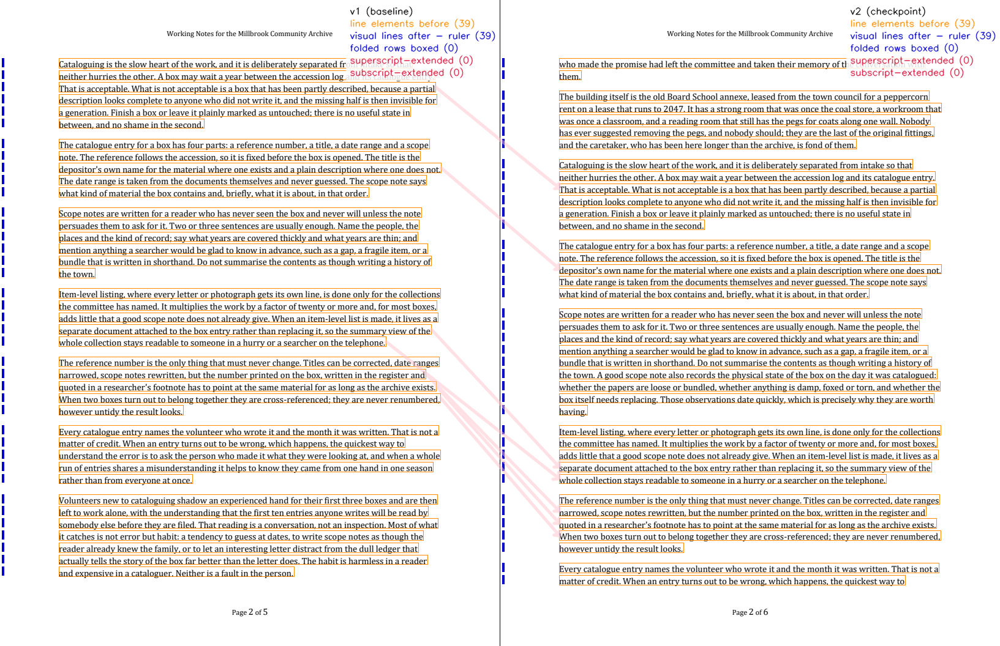
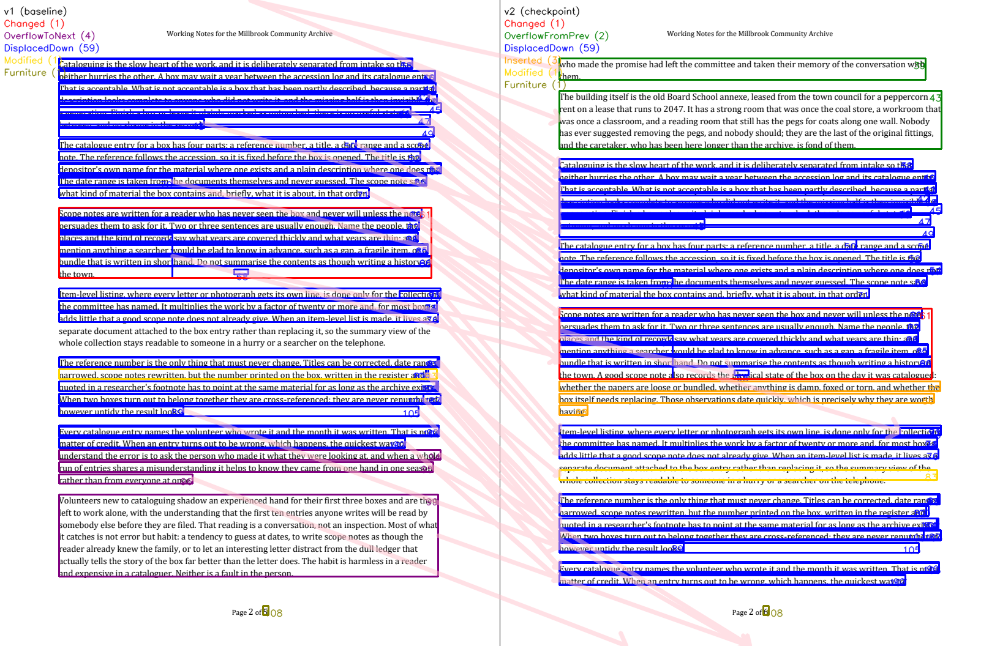
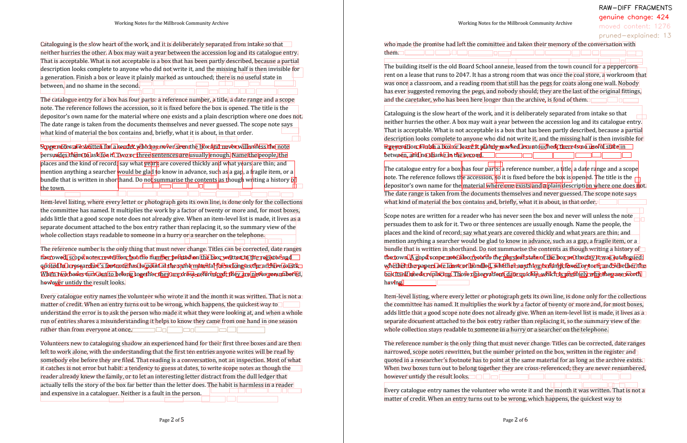
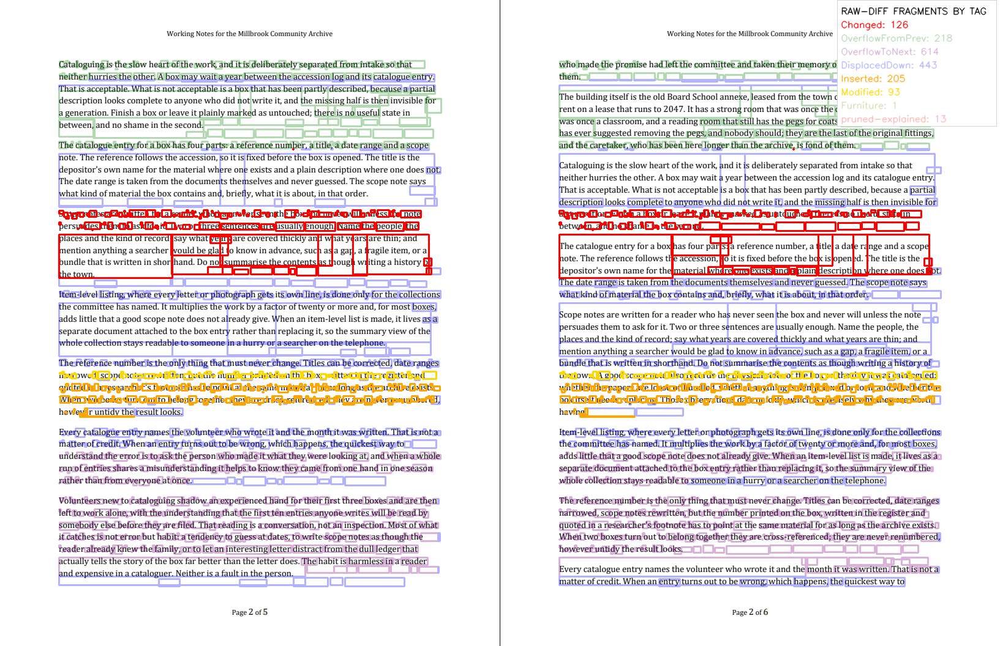
fragment-tags.png verified against fragments.json (1713 fragments; border colour checked on 843 fragment-sides (2583 not checkable: overlapped by other borders); 38 fragment-sides are hidden under the legend panel)
71 emitted · 5 pruned · raw=1633 · aggregated=65
Verified against the returned PageMatchResult: 71 returned PageDiffs, 71 table rows marked V.
Verification passed: every returned PageDiff is in the table and every non-returned row is pruned.
| ret | id | parent | block | tag | mechanism | frame | baseline rect (v1) | checkpoint rect (v2) | approved off | pruned |
|---|---|---|---|---|---|---|---|---|---|---|
| V | 1698 | 1633 | 38 | DisplacedDown | M1Block | baseline | 96,95 577×16 | 96,259 577×16 | (0, 164) | no |
| V | 1699 | 1633 | 39 | OverflowFromPrev | Band | checkpoint | — | 96,95 598×35 | — | no |
| V | 1700 | 1634 | 40 | DisplacedDown | M1Block | baseline | 96,115 614×15 | 96,279 614×15 | (0, 164) | no |
| V | 1701 | 1635 | 41 | DisplacedDown | M1Block | baseline | 96,134 615×16 | 96,298 615×16 | (0, 164) | no |
| V | 1702 | 1636 | 42 | DisplacedDown | M1Block | baseline | 96,148 604×16 | 96,313 604×16 | (0, 165) | no |
| V | 1703 | 1635 | 43 | OverflowFromPrev | Band | checkpoint | — | 96,148 624×95 | — | no |
| V | 1704 | 1637 | 44 | DisplacedDown | M1Block | baseline | 96,154 617×16 | 96,319 617×16 | (0, 165) | no |
| V | 1705 | 1638 | 45 | DisplacedDown | M1Block | baseline | 96,168 624×15 | 96,333 624×15 | (0, 165) | no |
| V | 1706 | 1639 | 46 | DisplacedDown | M1Block | baseline | 96,174 574×16 | 96,338 574×16 | (0, 164) | no |
| V | 1707 | 1640 | 47 | DisplacedDown | M1Block | baseline | 96,187 606×16 | 96,351 606×16 | (0, 164) | no |
| V | 1708 | 1641 | 48 | DisplacedDown | M1Block | baseline | 96,194 237×15 | 96,358 237×15 | (0, 164) | no |
| V | 1709 | 1642 | 49 | DisplacedDown | M1Block | baseline | 96,207 612×16 | 96,371 612×16 | (0, 164) | no |
| V | 1710 | 1643 | 50 | DisplacedDown | M1Block | baseline | 96,227 485×16 | 96,391 485×16 | (0, 164) | no |
| V | 1711 | 1644 | 51 | DisplacedDown | M1Block | baseline | 96,227 605×16 | 96,391 605×16 | (0, 164) | no |
| V | 1712 | 1645 | 52 | DisplacedDown | M1Block | baseline | 96,247 590×15 | 96,411 590×15 | (0, 164) | no |
| V | 1713 | 1646 | 53 | DisplacedDown | M1Block | baseline | 96,96 577×16 | 96,260 577×16 | (0, 164) | no |
| V | 1714 | 1647 | 54 | DisplacedDown | M1Block | baseline | 96,266 624×16 | 96,430 624×16 | (0, 164) | no |
| V | 1715 | 1648 | 55 | DisplacedDown | M1Block | baseline | 96,116 614×15 | 96,280 614×15 | (0, 164) | no |
| V | 1716 | 1649 | 56 | DisplacedDown | M1Block | baseline | 96,286 600×16 | 96,450 600×16 | (0, 164) | no |
| V | 1717 | 1650 | 57 | DisplacedDown | M1Block | baseline | 96,136 615×15 | 96,300 615×15 | (0, 164) | no |
| V | 1718 | 1651 | 58 | DisplacedDown | M1Block | baseline | 96,154 617×16 | 96,319 617×16 | (0, 165) | no |
| V | 1719 | 1652 | 59 | DisplacedDown | M1Block | baseline | 96,175 574×16 | 96,339 574×16 | (0, 164) | no |
| V | 1720 | 1653 | 60 | DisplacedDown | M1Block | baseline | 96,339 592×16 | 96,503 592×16 | (0, 164) | no |
| V | 1721 | 1656 | 61 | Changed | M3ScoredBand | both | 96,339 608×115 | 96,339 608×115 | — | no |
| V | 1722 | 1654 | 62 | DisplacedDown | M1Block | baseline | 96,359 588×16 | 96,523 588×16 | (0, 164) | no |
| V | 1723 | 1655 | 63 | DisplacedDown | M1Block | baseline | 96,379 586×15 | 96,543 586×15 | (0, 164) | no |
| V | 1724 | 1656 | 64 | DisplacedDown | M3ScoredBand | baseline | 96,383 185×71 | 96,548 185×71 | (0, 165) | no |
| V | 1725 | 1657 | 65 | DisplacedDown | M1Block | baseline | 96,398 602×16 | 96,562 602×16 | (0, 164) | no |
| V | 1726 | 1658 | 66 | DisplacedDown | M1Block | baseline | 96,418 608×16 | 96,582 608×16 | (0, 164) | no |
| V | 1727 | 1659 | 67 | DisplacedDown | M1Block | baseline | 96,268 624×15 | 96,432 624×15 | (0, 164) | no |
| V | 1728 | 1660 | 68 | DisplacedDown | M3ScoredBand | baseline | 382,440 23×8 | 382,605 23×8 | (0, 165) | no |
| V | 1729 | 1661 | 69 | DisplacedDown | M1Block | baseline | 96,287 600×16 | 96,451 600×16 | (0, 164) | no |
| V | 1730 | 1656 | 70 | DisplacedDown | M1Block | baseline | 96,290 185×13 | 96,454 185×13 | (0, 164) | no |
| V | 1731 | 1662 | 71 | DisplacedDown | M1Block | baseline | 96,307 506×16 | 96,471 506×16 | (0, 164) | no |
| V | 1732 | 1663 | 72 | DisplacedDown | M1Block | baseline | 96,471 623×16 | 96,695 623×16 | (0, 224) | no |
| V | 1733 | 1664 | 73 | DisplacedDown | M1Block | baseline | 652,475 67×12 | 652,699 67×12 | (0, 224) | no |
| V | 1734 | 1665 | 74 | DisplacedDown | M1Block | baseline | 96,491 617×16 | 96,714 617×16 | (0, 223) | no |
| V | 1735 | 1666 | 75 | DisplacedDown | M1Block | baseline | 96,340 592×16 | 96,504 592×16 | (0, 164) | no |
| V | 1736 | 1667 | 76 | DisplacedDown | M1Block | baseline | 96,511 619×15 | 96,734 619×15 | (0, 223) | no |
| V | 1737 | 1668 | 77 | DisplacedDown | M1Block | baseline | 96,360 588×16 | 96,524 588×16 | (0, 164) | no |
| V | 1738 | 1669 | 78 | DisplacedDown | M1Block | baseline | 96,380 586×15 | 96,544 586×15 | (0, 164) | no |
| V | 1739 | 1670 | 79 | DisplacedDown | M1Block | baseline | 96,400 602×15 | 96,564 602×15 | (0, 164) | no |
| V | 1740 | 1671 | 80 | DisplacedDown | M1Block | baseline | 96,419 608×16 | 96,583 608×16 | (0, 164) | no |
| V | 1741 | 1672 | 81 | DisplacedDown | M1Line | baseline | 96,583 621×16 | 96,807 621×16 | (0, 224) | no |
| V | 1742 | 1673 | 82 | DisplacedDown | M1Line | baseline | 96,603 599×16 | 96,827 599×16 | (0, 224) | no |
| V | 1743 | 1674 | 83 | Modified | None | both | 96,603 617×16 | 96,603 617×16 | — | no |
| V | 1744 | 1675 | 84 | DisplacedDown | M1Line | baseline | 96,623 616×16 | 96,847 616×16 | (0, 224) | no |
| V | 1745 | 1675 | 85 | Inserted | None | checkpoint | — | 96,623 622×16 | — | no |
| V | 1746 | 1676 | 86 | Inserted | None | checkpoint | — | 96,643 612×15 | — | no |
| V | 1747 | 1676 | 87 | DisplacedDown | M1Block | baseline | 96,643 623×15 | 96,866 623×15 | (0, 223) | no |
| V | 1748 | 1677 | 88 | Inserted | None | checkpoint | — | 96,662 46×16 | — | no |
| V | 1749 | 1677 | 89 | DisplacedDown | M1Block | baseline | 96,662 203×16 | 96,885 203×16 | (0, 223) | no |
| V | 1750 | 1678 | 90 | DisplacedDown | M1Block | baseline | 96,695 620×16 | 96,918 620×16 | (0, 223) | no |
| V | 1751 | 1679 | 91 | DisplacedDown | M1Block | baseline | 96,471 623×16 | 96,695 623×16 | (0, 224) | no |
| V | 1752 | 1680 | 92 | DisplacedDown | M1Block | baseline | 96,715 565×16 | 96,939 565×16 | (0, 224) | no |
| V | 1753 | 1681 | 93 | DisplacedDown | M1Block | baseline | 96,492 617×16 | 96,715 617×16 | (0, 223) | no |
| V | 1754 | 1682 | 94 | OverflowToNext | None | baseline | 96,735 623×16 | — | — | no |
| V | 1755 | 1683 | 95 | OverflowToNext | None | baseline | 96,755 611×16 | — | — | no |
| V | 1756 | 1684 | 96 | OverflowToNext | None | baseline | 96,775 218×15 | — | — | no |
| V | 1757 | 1686 | 97 | DisplacedDown | M1Line | baseline | 96,584 618×16 | 96,808 618×16 | (0, 224) | no |
| V | 1758 | 1687 | 98 | DisplacedDown | M1Line | baseline | 96,584 621×16 | 96,808 621×16 | (0, 224) | no |
| V | 1759 | 1686 | 99 | OverflowToNext | Band | baseline | 96,808 619×134 | — | — | no |
| V | 1760 | 1688 | 100 | DisplacedDown | M1Line | baseline | 96,603 603×16 | 96,827 603×16 | (0, 224) | no |
| V | 1761 | 1689 | 101 | DisplacedDown | M1Line | baseline | 96,623 616×16 | 96,847 616×16 | (0, 224) | no |
| V | 1762 | 1690 | 102 | DisplacedDown | M1Line | baseline | 96,623 619×16 | 96,847 619×16 | (0, 224) | no |
| V | 1763 | 1691 | 103 | DisplacedDown | M1Block | baseline | 96,644 595×16 | 96,867 595×16 | (0, 223) | no |
| V | 1764 | 1692 | 104 | DisplacedDown | M1Block | baseline | 96,644 623×16 | 96,867 623×16 | (0, 223) | no |
| V | 1765 | 1693 | 105 | DisplacedDown | M1Block | baseline | 96,664 587×16 | 96,887 587×16 | (0, 223) | no |
| V | 1766 | 1695 | 106 | DisplacedDown | M1Block | baseline | 96,697 620×16 | 96,920 620×16 | (0, 223) | no |
| V | 1767 | 1696 | 107 | DisplacedDown | M1Block | baseline | 96,716 565×16 | 96,940 565×16 | (0, 224) | no |
| V | 1768 | 1697 | 108 | Furniture | None | both | 429,990 9×15 | 429,990 9×15 | — | no |
| X | 1769 | 1682 | -1 | Modified | None | both | 96,735 623×16 | 96,735 623×16 | — | yes overflow-covered |
| X | 1770 | 1683 | -1 | Modified | None | both | 96,755 611×16 | 96,755 611×16 | — | yes overflow-covered |
| X | 1771 | 1684 | -1 | Modified | None | both | 96,775 218×15 | 96,775 218×15 | — | yes overflow-covered |
| X | 1772 | 1685 | -1 | DisplacedDown | M1Block | baseline | 96,551 534×15 | 96,775 534×15 | (0, 224) | yes overflow-covered |
| X | 1773 | 1694 | -1 | OverflowToNext | Band | baseline | 96,907 602×15 | — | — | yes crossing-evicted |
Pair 2 v1 p2 ↔ v2 p2 DisplacedDown 44Furniture 1Inserted 1OverflowFromPrev 2OverflowToNext 7
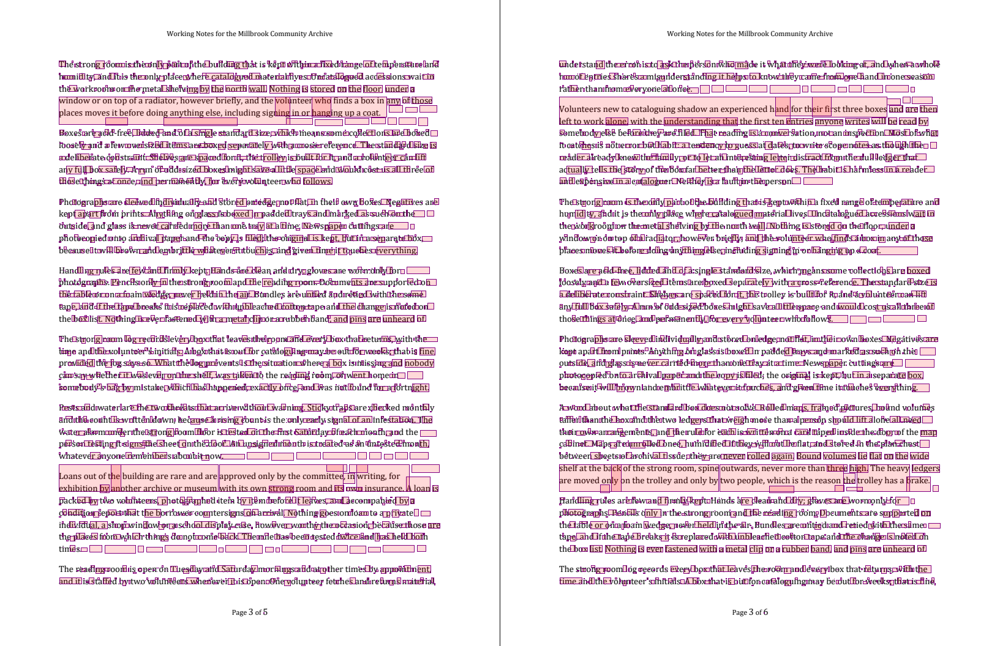
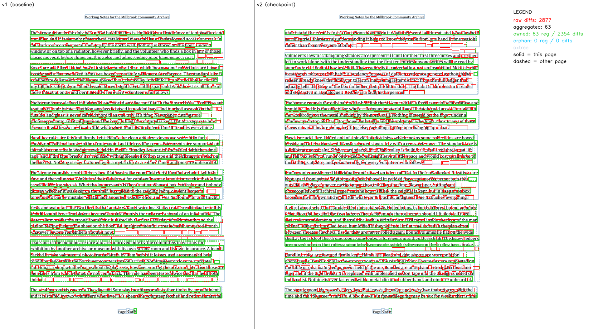
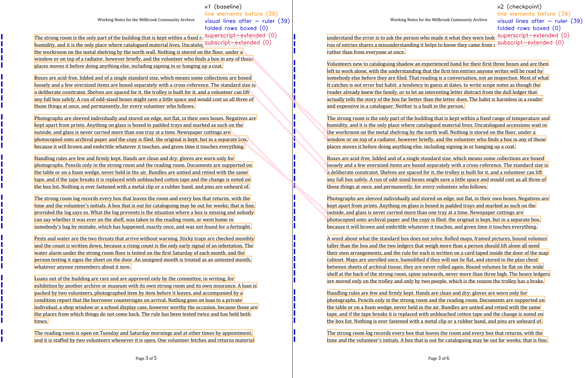
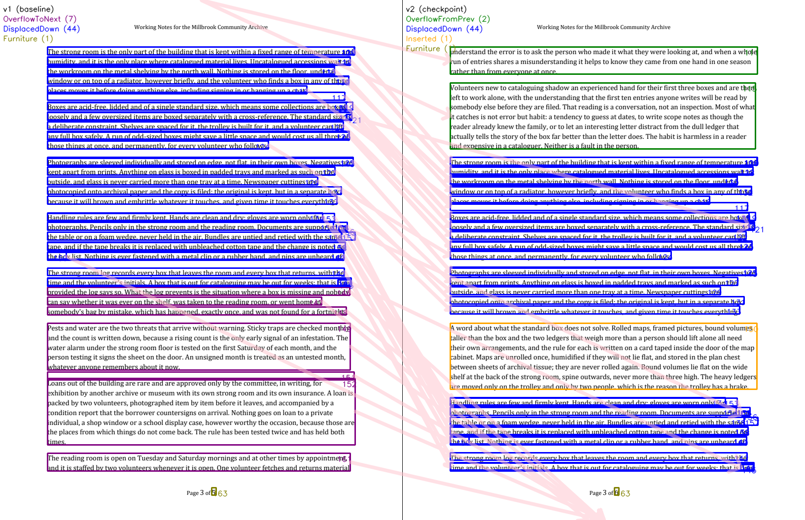
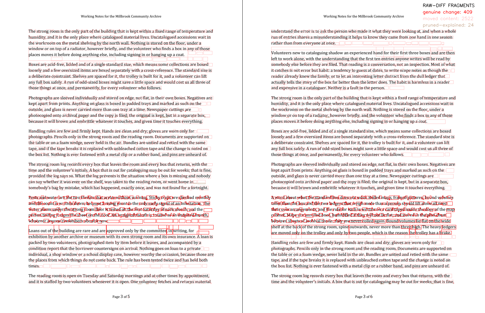
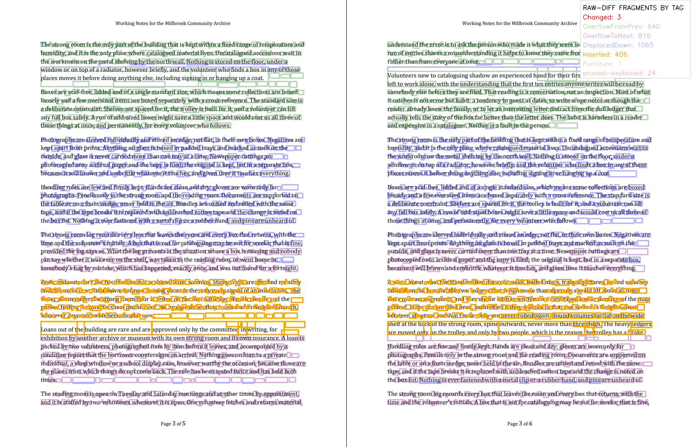
fragment-tags.png verified against fragments.json (2955 fragments; border colour checked on 1263 fragment-sides (4647 not checkable: overlapped by other borders); 61 fragment-sides are hidden under the legend panel)
55 emitted · 17 pruned · raw=2877 · aggregated=63
Verified against the returned PageMatchResult: 55 returned PageDiffs, 55 table rows marked V.
Verification passed: every returned PageDiff is in the table and every non-returned row is pruned.
| ret | id | parent | block | tag | mechanism | frame | baseline rect (v1) | checkpoint rect (v2) | approved off | pruned |
|---|---|---|---|---|---|---|---|---|---|---|
| V | 2940 | 2877 | 109 | DisplacedDown | M1Block | baseline | 96,95 622×16 | 96,319 622×16 | (0, 224) | no |
| V | 2941 | 2878 | 110 | DisplacedDown | M1Block | baseline | 96,95 623×16 | 96,319 623×16 | (0, 224) | no |
| V | 2942 | 2877 | 111 | OverflowFromPrev | Band | checkpoint | — | 96,95 623×55 | — | no |
| V | 2943 | 2879 | 112 | DisplacedDown | M1Block | baseline | 96,115 614×15 | 96,338 614×15 | (0, 223) | no |
| V | 2944 | 2880 | 113 | DisplacedDown | M1Block | baseline | 96,134 582×16 | 96,357 582×16 | (0, 223) | no |
| V | 2945 | 2881 | 114 | DisplacedDown | M1Block | baseline | 96,154 611×16 | 96,378 611×16 | (0, 224) | no |
| V | 2946 | 2881 | 115 | OverflowFromPrev | Band | checkpoint | — | 96,168 619×134 | — | no |
| V | 2947 | 2882 | 116 | DisplacedDown | M1Block | baseline | 96,174 526×16 | 96,398 526×16 | (0, 224) | no |
| V | 2948 | 2883 | 117 | DisplacedDown | M1Block | baseline | 96,187 603×16 | 96,411 603×16 | (0, 224) | no |
| V | 2949 | 2884 | 118 | DisplacedDown | M1Line | baseline | 96,207 606×16 | 96,431 606×16 | (0, 224) | no |
| V | 2950 | 2885 | 119 | DisplacedDown | M1Line | baseline | 96,207 619×16 | 96,431 619×16 | (0, 224) | no |
| V | 2951 | 2886 | 120 | DisplacedDown | M1Block | baseline | 96,227 617×16 | 96,450 617×16 | (0, 223) | no |
| V | 2952 | 2887 | 121 | DisplacedDown | M1Block | baseline | 702,232 11×11 | 702,454 11×11 | (0, 222) | no |
| V | 2953 | 2888 | 122 | DisplacedDown | M1Block | baseline | 96,247 600×15 | 96,470 600×15 | (0, 223) | no |
| V | 2954 | 2889 | 123 | DisplacedDown | M1Block | baseline | 96,266 612×16 | 96,489 612×16 | (0, 223) | no |
| V | 2955 | 2890 | 124 | DisplacedDown | M1Line | baseline | 96,286 448×16 | 96,510 448×16 | (0, 224) | no |
| V | 2956 | 2891 | 125 | DisplacedDown | M1Block | baseline | 96,319 620×16 | 96,542 620×16 | (0, 223) | no |
| V | 2957 | 2892 | 126 | DisplacedDown | M1Block | baseline | 96,95 622×16 | 96,319 622×16 | (0, 224) | no |
| V | 2958 | 2893 | 127 | DisplacedDown | M1Block | baseline | 96,339 583×16 | 96,563 583×16 | (0, 224) | no |
| V | 2959 | 2894 | 128 | DisplacedDown | M1Block | baseline | 96,116 614×16 | 96,339 614×16 | (0, 223) | no |
| V | 2960 | 2895 | 129 | DisplacedDown | M1Block | baseline | 96,359 548×16 | 96,582 548×16 | (0, 223) | no |
| V | 2961 | 2896 | 130 | DisplacedDown | M1Block | baseline | 96,136 582×16 | 96,359 582×16 | (0, 223) | no |
| V | 2962 | 2897 | 131 | DisplacedDown | M1Block | baseline | 96,379 596×15 | 96,602 596×15 | (0, 223) | no |
| V | 2963 | 2898 | 132 | DisplacedDown | M1Block | baseline | 96,155 611×15 | 96,379 611×15 | (0, 224) | no |
| V | 2964 | 2899 | 133 | DisplacedDown | M1Block | baseline | 96,398 587×16 | 96,621 587×16 | (0, 223) | no |
| V | 2965 | 2900 | 134 | DisplacedDown | M1Block | baseline | 96,432 558×15 | 96,807 558×15 | (0, 375) | no |
| V | 2966 | 2901 | 135 | DisplacedDown | M1Line | baseline | 96,208 606×15 | 96,432 606×15 | (0, 224) | no |
| V | 2967 | 2902 | 136 | DisplacedDown | M1Block | baseline | 96,451 608×16 | 96,827 608×16 | (0, 376) | no |
| V | 2968 | 2903 | 137 | DisplacedDown | M1Block | baseline | 96,228 617×16 | 96,451 617×16 | (0, 223) | no |
| V | 2969 | 2904 | 138 | DisplacedDown | M1Block | baseline | 96,471 596×16 | 96,847 596×16 | (0, 376) | no |
| V | 2970 | 2905 | 139 | DisplacedDown | M1Block | baseline | 96,491 604×16 | 96,866 604×16 | (0, 375) | no |
| V | 2971 | 2906 | 140 | DisplacedDown | M1Block | baseline | 96,268 612×16 | 96,491 612×16 | (0, 223) | no |
| V | 2972 | 2907 | 141 | DisplacedDown | M1Block | baseline | 96,511 601×15 | 96,886 601×15 | (0, 375) | no |
| V | 2973 | 2908 | 142 | DisplacedDown | M1Block | baseline | 96,544 602×15 | 96,919 602×15 | (0, 375) | no |
| V | 2974 | 2909 | 143 | DisplacedDown | M1Block | baseline | 96,321 620×15 | 96,544 620×15 | (0, 223) | no |
| V | 2975 | 2910 | 144 | DisplacedDown | M1Block | baseline | 96,564 616×15 | 96,939 616×15 | (0, 375) | no |
| V | 2976 | 2911 | 145 | DisplacedDown | M1Block | baseline | 685,568 26×13 | 685,943 26×13 | (0, 375) | no |
| V | 2977 | 2912 | 146 | OverflowToNext | None | baseline | 96,583 613×16 | — | — | no |
| V | 2978 | 2913 | 147 | OverflowToNext | None | baseline | 96,603 556×16 | — | — | no |
| V | 2979 | 2915 | 148 | OverflowToNext | None | baseline | 96,623 606×16 | — | — | no |
| V | 2980 | 2916 | 149 | OverflowToNext | Band | baseline | 96,656 614×95 | — | — | no |
| V | 2981 | 2916 | 150 | Inserted | None | checkpoint | — | 96,656 622×134 | — | no |
| V | 2982 | 2924 | 151 | OverflowToNext | Band | baseline | 96,755 622×16 | — | — | no |
| V | 2983 | 2924 | 152 | OverflowToNext | Band | baseline | 96,768 624×135 | — | — | no |
| V | 2984 | 2928 | 153 | DisplacedDown | M1Block | baseline | 96,433 582×16 | 96,808 582×16 | (0, 375) | no |
| V | 2985 | 2929 | 154 | DisplacedDown | M1Block | baseline | 96,451 580×16 | 96,827 580×16 | (0, 376) | no |
| V | 2986 | 2930 | 155 | DisplacedDown | M1Block | baseline | 96,451 608×16 | 96,827 608×16 | (0, 376) | no |
| V | 2987 | 2931 | 156 | DisplacedDown | M1Block | baseline | 687,459 16×9 | 687,835 16×9 | (0, 376) | no |
| V | 2988 | 2932 | 157 | DisplacedDown | M1Block | baseline | 96,471 624×16 | 96,847 624×16 | (0, 376) | no |
| V | 2989 | 2933 | 158 | DisplacedDown | M1Block | baseline | 96,492 604×16 | 96,867 604×16 | (0, 375) | no |
| V | 2990 | 2934 | 159 | DisplacedDown | M1Block | baseline | 96,512 38×16 | 96,887 38×16 | (0, 375) | no |
| V | 2991 | 2935 | 160 | DisplacedDown | M1Block | baseline | 96,512 601×16 | 96,887 601×16 | (0, 375) | no |
| V | 2992 | 2936 | 161 | OverflowToNext | Band | baseline | 96,920 614×36 | — | — | no |
| V | 2993 | 2938 | 162 | DisplacedDown | M1Block | baseline | 96,565 616×16 | 96,940 616×16 | (0, 375) | no |
| V | 2994 | 2939 | 163 | Furniture | None | both | 429,990 9×15 | 429,990 9×15 | — | no |
| X | 2995 | 2912 | -1 | Modified | None | both | 96,583 613×16 | 96,583 613×16 | — | yes overflow-covered |
| X | 2996 | 2913 | -1 | Modified | None | both | 96,603 556×16 | 96,603 556×16 | — | yes overflow-covered |
| X | 2997 | 2914 | -1 | DisplacedDown | M1Block | baseline | 96,380 596×16 | 96,603 596×16 | (0, 223) | yes overflow-covered |
| X | 2998 | 2915 | -1 | Modified | None | both | 96,623 606×16 | 96,623 606×16 | — | yes overflow-covered |
| X | 2999 | 2916 | -1 | OverflowToNext | Band | baseline | 96,656 614×16 | — | — | yes crossing-evicted |
| X | 3000 | 2917 | -1 | OverflowToNext | Band | baseline | 96,676 611×15 | — | — | yes crossing-evicted |
| X | 3001 | 2918 | -1 | OverflowToNext | Band | baseline | 96,695 587×16 | — | — | yes crossing-evicted |
| X | 3002 | 2919 | -1 | OverflowToNext | Band | baseline | 96,695 618×16 | — | — | yes crossing-evicted |
| X | 3003 | 2920 | -1 | OverflowToNext | Band | baseline | 96,715 589×16 | — | — | yes crossing-evicted |
| X | 3004 | 2921 | -1 | OverflowToNext | Band | baseline | 96,715 606×16 | — | — | yes crossing-evicted |
| X | 3005 | 2922 | -1 | OverflowToNext | Band | baseline | 96,735 270×16 | — | — | yes crossing-evicted |
| X | 3006 | 2923 | -1 | OverflowToNext | Band | baseline | 96,735 604×16 | — | — | yes crossing-evicted |
| X | 3007 | 2925 | -1 | OverflowToNext | Band | baseline | 96,768 558×16 | — | — | yes crossing-evicted |
| X | 3008 | 2926 | -1 | OverflowToNext | Band | baseline | 96,775 606×15 | — | — | yes crossing-evicted |
| X | 3009 | 2927 | -1 | OverflowToNext | Band | baseline | 96,788 621×16 | — | — | yes crossing-evicted |
| X | 3010 | 2936 | -1 | OverflowToNext | Band | baseline | 96,920 609×16 | — | — | yes crossing-evicted |
| X | 3011 | 2937 | -1 | OverflowToNext | Band | baseline | 96,940 614×16 | — | — | yes crossing-evicted |
Pair 3 v1 p3 ↔ v2 p3 DisplacedDown 42Furniture 1OverflowFromPrev 5OverflowToNext 3
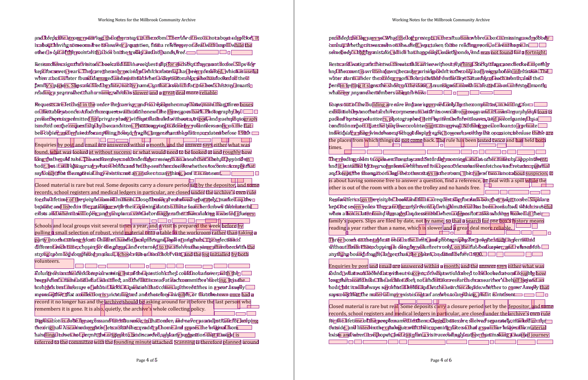
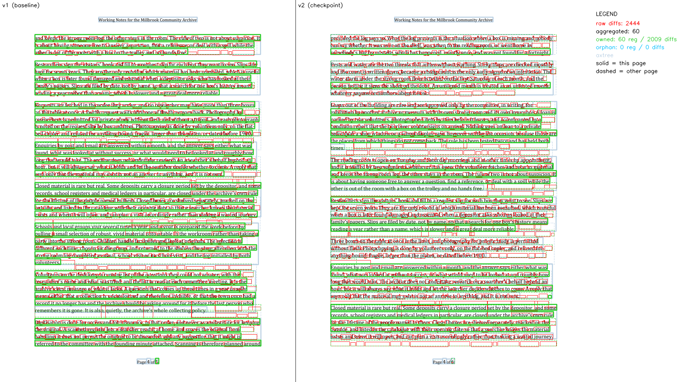
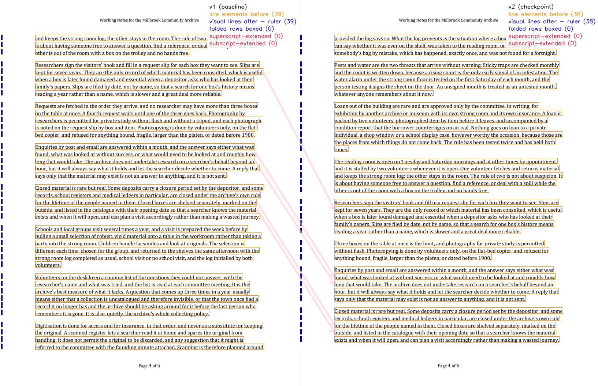
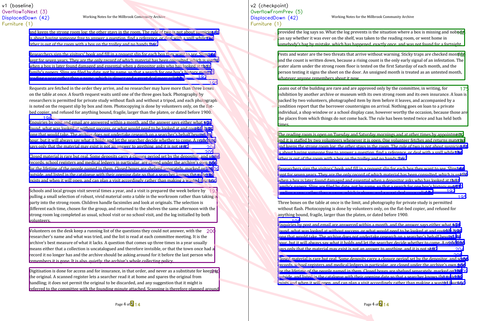
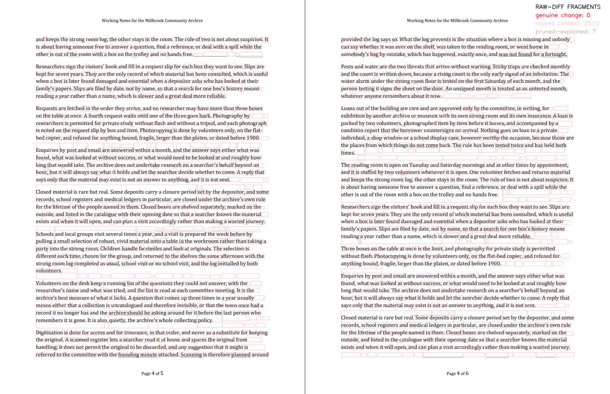
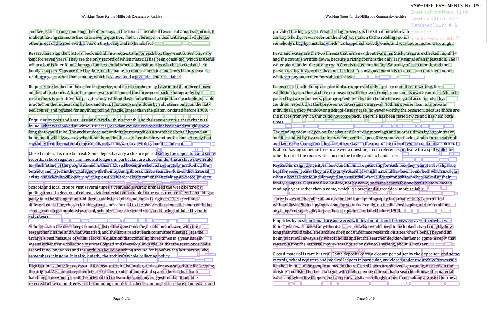
fragment-tags.png verified against fragments.json (2517 fragments; border colour checked on 1184 fragment-sides (3850 not checkable: overlapped by other borders); 37 fragment-sides are hidden under the legend panel)
51 emitted · 17 pruned · raw=2444 · aggregated=60
Verified against the returned PageMatchResult: 51 returned PageDiffs, 51 table rows marked V.
Verification passed: every returned PageDiff is in the table and every non-returned row is pruned.
| ret | id | parent | block | tag | mechanism | frame | baseline rect (v1) | checkpoint rect (v2) | approved off | pruned |
|---|---|---|---|---|---|---|---|---|---|---|
| V | 2504 | 2444 | 164 | DisplacedDown | M1Block | baseline | 96,95 623×16 | 96,470 623×16 | (0, 375) | no |
| V | 2505 | 2444 | 165 | OverflowFromPrev | Band | checkpoint | — | 96,95 613×55 | — | no |
| V | 2506 | 2445 | 166 | DisplacedDown | M1Block | baseline | 96,115 605×15 | 96,490 605×15 | (0, 375) | no |
| V | 2507 | 2446 | 167 | DisplacedDown | M1Block | baseline | 96,134 422×16 | 96,509 422×16 | (0, 375) | no |
| V | 2508 | 2448 | 168 | DisplacedDown | M1Block | baseline | 96,168 612×15 | 96,543 612×15 | (0, 375) | no |
| V | 2509 | 2448 | 169 | OverflowFromPrev | Band | checkpoint | — | 96,168 614×94 | — | no |
| V | 2510 | 2449 | 170 | DisplacedDown | M1Block | baseline | 96,187 622×16 | 96,562 622×16 | (0, 375) | no |
| V | 2511 | 2450 | 171 | DisplacedDown | M1Block | baseline | 96,207 596×16 | 96,582 596×16 | (0, 375) | no |
| V | 2512 | 2451 | 172 | DisplacedDown | M1Block | baseline | 96,227 599×16 | 96,602 599×16 | (0, 375) | no |
| V | 2513 | 2452 | 173 | DisplacedDown | M1Block | baseline | 96,227 606×16 | 96,602 606×16 | (0, 375) | no |
| V | 2514 | 2453 | 174 | DisplacedDown | M1Block | baseline | 96,247 509×15 | 96,622 509×15 | (0, 375) | no |
| V | 2515 | 2454 | 175 | OverflowFromPrev | Band | checkpoint | — | 96,280 624×134 | — | no |
| V | 2516 | 2464 | 176 | DisplacedDown | M1Line | baseline | 96,392 598×16 | 96,728 598×16 | (0, 336) | no |
| V | 2517 | 2465 | 177 | DisplacedDown | M1Line | baseline | 96,412 603×15 | 96,748 603×15 | (0, 336) | no |
| V | 2518 | 2466 | 178 | DisplacedDown | M1Block | baseline | 96,432 599×15 | 96,767 599×15 | (0, 335) | no |
| V | 2519 | 2466 | 179 | OverflowFromPrev | None | checkpoint | — | 96,432 609×15 | — | no |
| V | 2520 | 2467 | 180 | DisplacedDown | M1Line | baseline | 96,451 612×16 | 96,787 612×16 | (0, 336) | no |
| V | 2521 | 2467 | 181 | OverflowFromPrev | None | checkpoint | — | 96,451 614×16 | — | no |
| V | 2522 | 2469 | 182 | DisplacedDown | M1Line | baseline | 96,471 522×16 | 96,807 522×16 | (0, 336) | no |
| V | 2523 | 2470 | 183 | DisplacedDown | M1Block | baseline | 96,96 623×16 | 96,471 623×16 | (0, 375) | no |
| V | 2524 | 2471 | 184 | DisplacedDown | M1Block | baseline | 96,116 605×16 | 96,491 605×16 | (0, 375) | no |
| V | 2525 | 2472 | 185 | DisplacedDown | M1Line | baseline | 96,504 624×16 | 96,840 624×16 | (0, 336) | no |
| V | 2526 | 2473 | 186 | DisplacedDown | M1Line | baseline | 96,524 615×16 | 96,860 615×16 | (0, 336) | no |
| V | 2527 | 2474 | 187 | DisplacedDown | M1Line | baseline | 96,544 604×15 | 96,880 604×15 | (0, 336) | no |
| V | 2528 | 2475 | 188 | DisplacedDown | M1Block | baseline | 96,169 612×15 | 96,544 612×15 | (0, 375) | no |
| V | 2529 | 2476 | 189 | DisplacedDown | M1Block | baseline | 96,564 605×15 | 96,899 605×15 | (0, 335) | no |
| V | 2530 | 2477 | 190 | DisplacedDown | M1Line | baseline | 96,583 614×16 | 96,919 614×16 | (0, 336) | no |
| V | 2531 | 2478 | 191 | DisplacedDown | M1Block | baseline | 96,228 599×16 | 96,603 599×16 | (0, 375) | no |
| V | 2532 | 2479 | 192 | DisplacedDown | M1Block | baseline | 96,241 580×16 | 96,616 580×16 | (0, 375) | no |
| V | 2533 | 2478 | 193 | OverflowToNext | Band | baseline | 96,616 617×115 | — | — | no |
| V | 2534 | 2480 | 194 | DisplacedDown | M1Block | baseline | 96,248 509×16 | 96,623 509×16 | (0, 375) | no |
| V | 2535 | 2481 | 195 | DisplacedDown | M1Block | baseline | 96,261 617×16 | 96,636 617×16 | (0, 375) | no |
| V | 2536 | 2485 | 196 | DisplacedDown | M1Block | baseline | 96,376 71×16 | 96,715 71×16 | (0, 339) | no |
| V | 2537 | 2486 | 197 | DisplacedDown | M1Line | baseline | 96,393 598×15 | 96,729 598×15 | (0, 336) | no |
| V | 2538 | 2487 | 198 | DisplacedDown | M1Line | baseline | 96,412 567×16 | 96,748 567×16 | (0, 336) | no |
| V | 2539 | 2488 | 199 | DisplacedDown | M1Line | baseline | 96,412 603×16 | 96,748 603×16 | (0, 336) | no |
| V | 2540 | 2487 | 200 | OverflowToNext | Band | baseline | 96,748 609×115 | — | — | no |
| V | 2541 | 2489 | 201 | DisplacedDown | M1Block | baseline | 96,433 585×16 | 96,768 585×16 | (0, 335) | no |
| V | 2542 | 2490 | 202 | DisplacedDown | M1Line | baseline | 96,452 585×16 | 96,788 585×16 | (0, 336) | no |
| V | 2543 | 2491 | 203 | DisplacedDown | M1Line | baseline | 96,452 612×16 | 96,788 612×16 | (0, 336) | no |
| V | 2544 | 2492 | 204 | DisplacedDown | M1Line | baseline | 96,472 609×16 | 96,808 609×16 | (0, 336) | no |
| V | 2545 | 2494 | 205 | DisplacedDown | M1Block | baseline | 96,488 603×16 | 96,827 603×16 | (0, 339) | no |
| V | 2546 | 2495 | 206 | DisplacedDown | M1Line | baseline | 96,505 624×16 | 96,841 624×16 | (0, 336) | no |
| V | 2547 | 2496 | 207 | DisplacedDown | M1Line | baseline | 96,525 615×15 | 96,861 615×15 | (0, 336) | no |
| V | 2548 | 2497 | 208 | DisplacedDown | M1Line | baseline | 96,544 604×16 | 96,880 604×16 | (0, 336) | no |
| V | 2549 | 2498 | 209 | DisplacedDown | M1Line | baseline | 96,544 621×16 | 96,880 621×16 | (0, 336) | no |
| V | 2550 | 2497 | 210 | OverflowToNext | Band | baseline | 96,880 624×76 | — | — | no |
| V | 2551 | 2499 | 211 | DisplacedDown | M1Block | baseline | 96,565 567×16 | 96,900 567×16 | (0, 335) | no |
| V | 2552 | 2500 | 212 | DisplacedDown | M1Block | baseline | 96,565 605×16 | 96,900 605×16 | (0, 335) | no |
| V | 2553 | 2501 | 213 | DisplacedDown | M1Line | baseline | 96,584 569×16 | 96,920 569×16 | (0, 336) | no |
| V | 2554 | 2503 | 214 | Furniture | None | both | 429,990 9×15 | 429,990 9×15 | — | no |
| X | 2555 | 2447 | -1 | OverflowFromPrev | Band | checkpoint | — | 96,134 606×16 | — | yes crossing-evicted |
| X | 2556 | 2454 | -1 | OverflowFromPrev | Band | checkpoint | — | 96,280 607×15 | — | yes crossing-evicted |
| X | 2557 | 2455 | -1 | OverflowFromPrev | Band | checkpoint | — | 96,300 573×15 | — | yes crossing-evicted |
| X | 2558 | 2456 | -1 | OverflowFromPrev | Band | checkpoint | — | 96,300 621×15 | — | yes crossing-evicted |
| X | 2559 | 2457 | -1 | OverflowFromPrev | Band | checkpoint | — | 96,319 582×16 | — | yes crossing-evicted |
| X | 2560 | 2458 | -1 | OverflowFromPrev | Band | checkpoint | — | 96,319 619×16 | — | yes crossing-evicted |
| X | 2561 | 2459 | -1 | OverflowFromPrev | Band | checkpoint | — | 96,339 580×16 | — | yes crossing-evicted |
| X | 2562 | 2460 | -1 | OverflowFromPrev | Band | checkpoint | — | 96,339 607×16 | — | yes crossing-evicted |
| X | 2563 | 2461 | -1 | OverflowFromPrev | Band | checkpoint | — | 96,359 600×16 | — | yes crossing-evicted |
| X | 2564 | 2462 | -1 | OverflowFromPrev | Band | checkpoint | — | 96,359 624×16 | — | yes crossing-evicted |
| X | 2565 | 2463 | -1 | OverflowFromPrev | Band | checkpoint | — | 96,379 604×15 | — | yes crossing-evicted |
| X | 2566 | 2468 | -1 | Modified | None | both | 96,451 614×16 | 96,451 614×16 | — | yes arrival-covered |
| X | 2567 | 2482 | -1 | OverflowToNext | Band | baseline | 96,656 572×16 | — | — | yes crossing-evicted |
| X | 2568 | 2483 | -1 | OverflowToNext | Band | baseline | 96,676 612×15 | — | — | yes crossing-evicted |
| X | 2569 | 2484 | -1 | OverflowToNext | Band | baseline | 96,695 595×16 | — | — | yes crossing-evicted |
| X | 2570 | 2493 | -1 | OverflowToNext | Band | baseline | 697,816 8×8 | — | — | yes crossing-evicted |
| X | 2571 | 2502 | -1 | OverflowToNext | Band | baseline | 96,940 624×16 | — | — | yes crossing-evicted |
Pair 4 v1 p4 ↔ v2 p4 Deleted 1DisplacedDown 40Furniture 1Inserted 1Modified 2OverflowFromPrev 6OverflowToNext 1
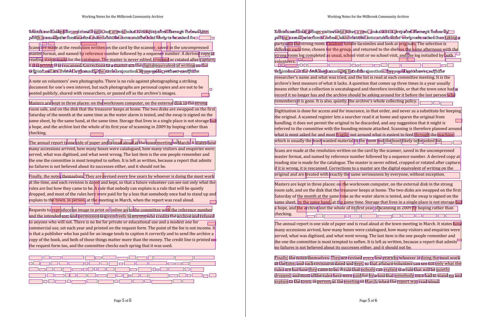
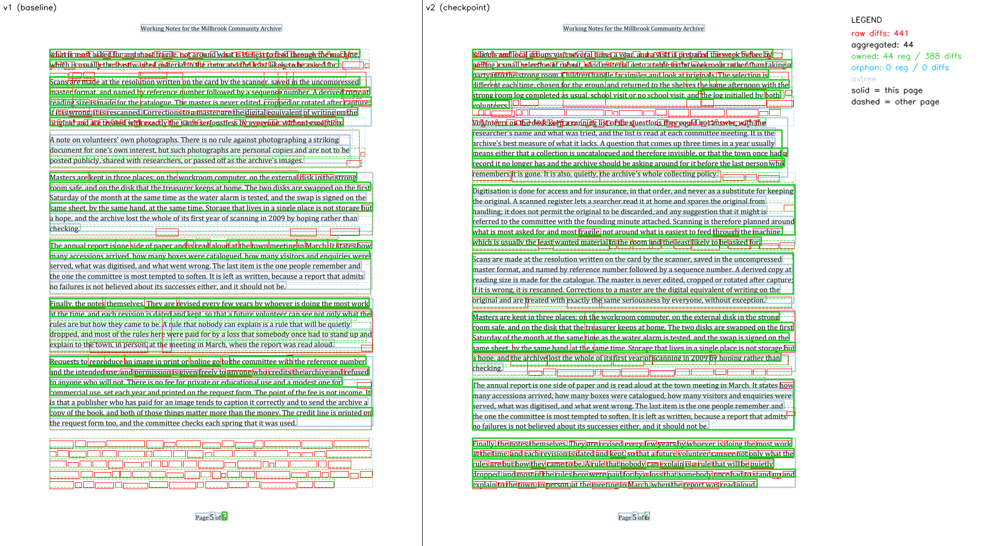
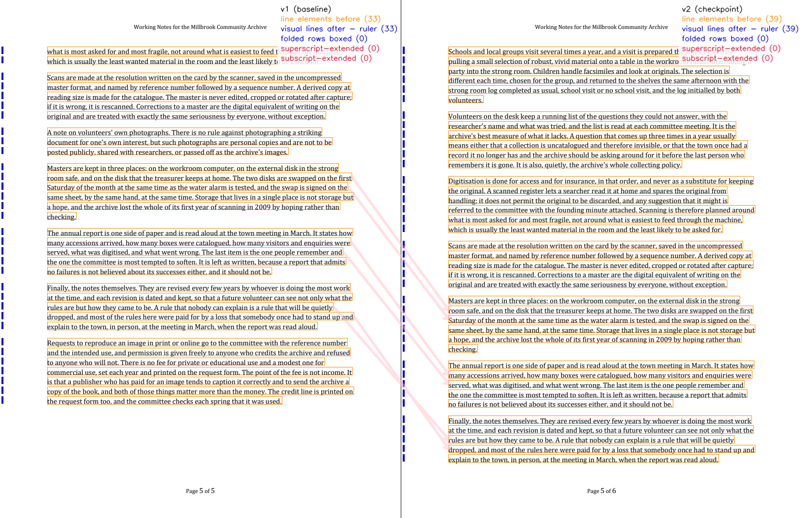
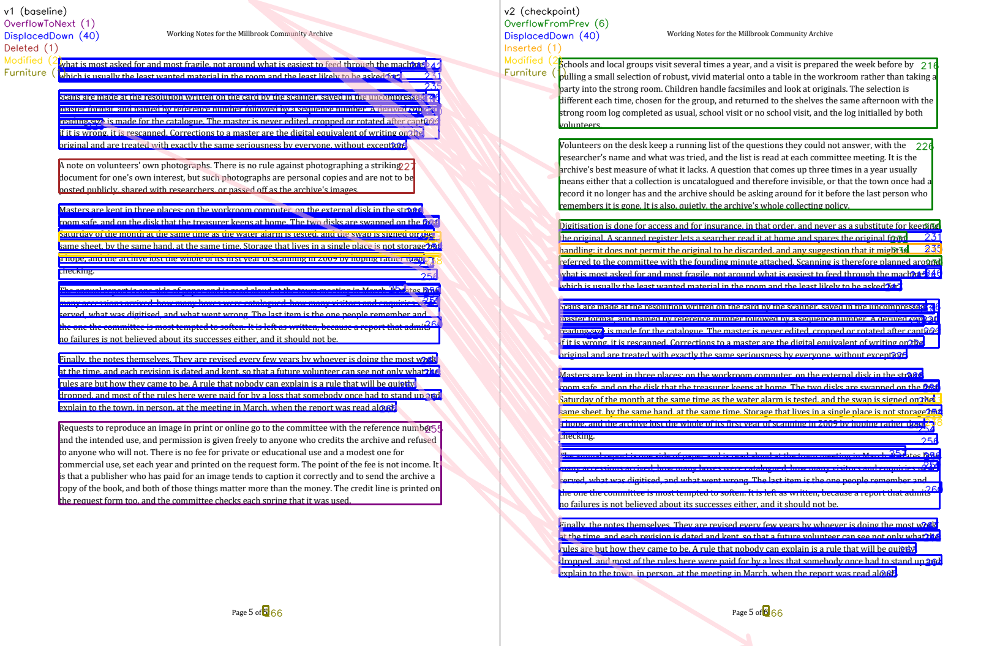
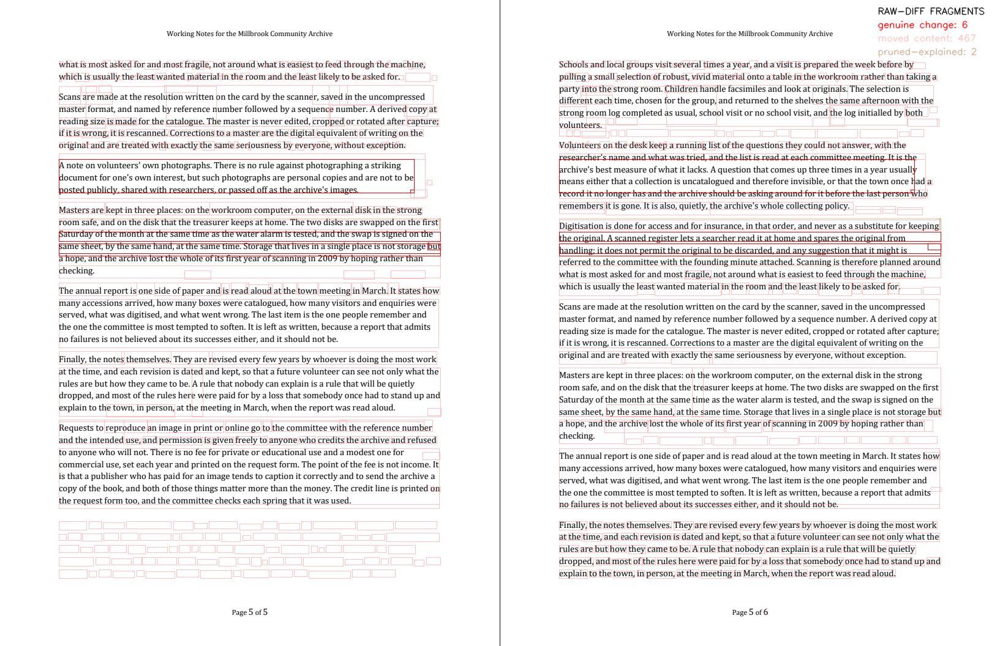
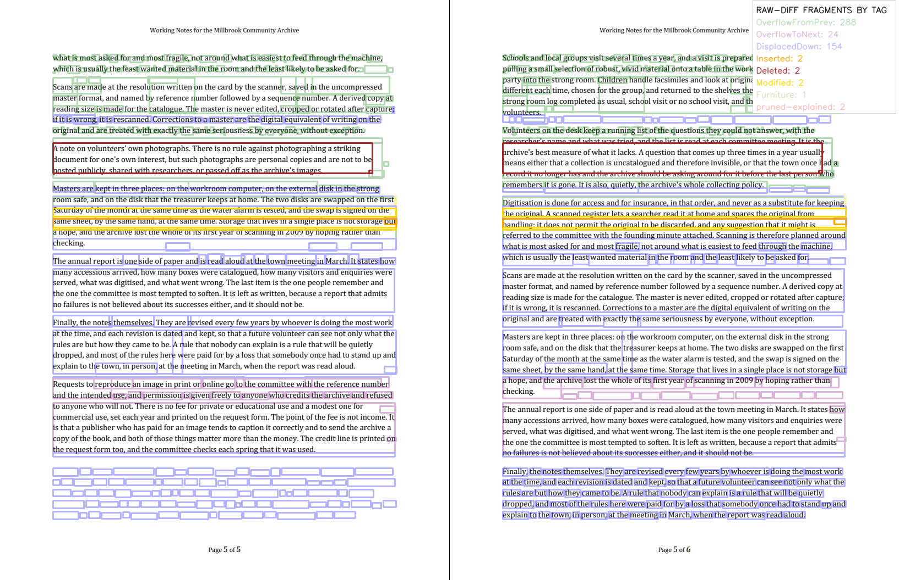
fragment-tags.png verified against fragments.json (475 fragments; border colour checked on 449 fragment-sides (501 not checkable: overlapped by other borders); 42 fragment-sides are hidden under the legend panel)
52 emitted · 8 pruned · raw=441 · aggregated=44
Verified against the returned PageMatchResult: 52 returned PageDiffs, 52 table rows marked V.
Verification passed: every returned PageDiff is in the table and every non-returned row is pruned.
| ret | id | parent | block | tag | mechanism | frame | baseline rect (v1) | checkpoint rect (v2) | approved off | pruned |
|---|---|---|---|---|---|---|---|---|---|---|
| V | 485 | 442 | 215 | DisplacedDown | M1Block | baseline | 96,95 599×16 | 96,437 599×16 | (0, 342) | no |
| V | 486 | 441 | 216 | OverflowFromPrev | Band | checkpoint | — | 96,95 617×114 | — | no |
| V | 487 | 443 | 217 | DisplacedDown | M1Block | baseline | 96,115 558×15 | 96,457 558×15 | (0, 342) | no |
| V | 488 | 446 | 218 | DisplacedDown | M1Block | baseline | 96,148 599×16 | 96,490 599×16 | (0, 342) | no |
| V | 489 | 447 | 219 | DisplacedDown | M1Block | baseline | 96,154 612×16 | 96,496 612×16 | (0, 342) | no |
| V | 490 | 448 | 220 | DisplacedDown | M1Block | baseline | 96,168 618×15 | 96,510 618×15 | (0, 342) | no |
| V | 491 | 449 | 221 | DisplacedDown | M1Block | baseline | 96,174 595×16 | 96,516 595×16 | (0, 342) | no |
| V | 492 | 450 | 222 | DisplacedDown | M1Block | baseline | 96,187 621×16 | 96,529 621×16 | (0, 342) | no |
| V | 493 | 451 | 223 | DisplacedDown | M1Block | baseline | 96,194 71×15 | 96,536 71×15 | (0, 342) | no |
| V | 494 | 452 | 224 | DisplacedDown | M1Block | baseline | 96,207 595×16 | 96,549 595×16 | (0, 342) | no |
| V | 495 | 453 | 225 | DisplacedDown | M1Block | baseline | 96,227 567×16 | 96,569 567×16 | (0, 342) | no |
| V | 496 | 453 | 226 | OverflowFromPrev | Band | checkpoint | — | 96,227 609×115 | — | no |
| V | 497 | 454 | 227 | Deleted | None | baseline | 96,260 580×55 | — | — | no |
| V | 498 | 457 | 228 | DisplacedDown | M1Block | baseline | 96,333 593×15 | 96,602 593×15 | (0, 269) | no |
| V | 499 | 458 | 229 | DisplacedDown | M1Block | baseline | 96,352 620×16 | 96,621 620×16 | (0, 269) | no |
| V | 500 | 458 | 230 | OverflowFromPrev | None | checkpoint | — | 96,359 621×16 | — | no |
| V | 501 | 459 | 231 | DisplacedDown | M1Block | baseline | 96,112 623×4 | 96,375 623×4 | (0, 263) | no |
| V | 502 | 459 | 232 | OverflowFromPrev | None | checkpoint | — | 96,379 567×15 | — | no |
| V | 503 | 459 | 233 | Modified | None | both | 96,379 623×15 | 96,379 623×15 | — | no |
| V | 504 | 460 | 234 | DisplacedDown | M1Block | baseline | 96,392 624×16 | 96,662 624×16 | (0, 270) | no |
| V | 505 | 459 | 235 | DisplacedDown | M1Block | baseline | 96,129 623×4 | 96,394 623×4 | (0, 265) | no |
| V | 506 | 459 | 236 | OverflowFromPrev | None | checkpoint | — | 96,398 569×16 | — | no |
| V | 507 | 459 | 237 | Inserted | None | checkpoint | — | 96,398 623×16 | — | no |
| V | 508 | 459 | 238 | Modified | None | both | 96,414 623×4 | 96,414 623×4 | — | no |
| V | 509 | 459 | 239 | OverflowFromPrev | None | checkpoint | — | 96,418 624×16 | — | no |
| V | 510 | 459 | 240 | DisplacedDown | M1Block | baseline | 96,170 623×4 | 96,434 623×4 | (0, 264) | no |
| V | 511 | 461 | 241 | DisplacedDown | M1Block | baseline | 96,96 599×16 | 96,438 599×16 | (0, 342) | no |
| V | 512 | 459 | 242 | DisplacedDown | M1Block | baseline | 96,96 623×16 | 96,438 623×16 | (0, 342) | no |
| V | 513 | 462 | 243 | DisplacedDown | M1Block | baseline | 96,116 558×16 | 96,458 558×16 | (0, 342) | no |
| V | 514 | 463 | 244 | DisplacedDown | M1Block | baseline | 96,465 622×15 | 96,734 622×15 | (0, 269) | no |
| V | 515 | 464 | 245 | DisplacedDown | M1Block | baseline | 96,484 618×16 | 96,753 618×16 | (0, 269) | no |
| V | 516 | 465 | 246 | DisplacedDown | M1Block | baseline | 96,147 620×79 | 96,489 620×79 | (0, 342) | no |
| V | 517 | 466 | 247 | DisplacedDown | M1Block | baseline | 96,577 617×16 | 96,847 617×16 | (0, 270) | no |
| V | 518 | 467 | 248 | DisplacedDown | M1Block | baseline | 96,597 621×15 | 96,866 621×15 | (0, 269) | no |
| V | 519 | 468 | 249 | DisplacedDown | M1Block | baseline | 96,334 593×16 | 96,603 593×16 | (0, 269) | no |
| V | 520 | 469 | 250 | DisplacedDown | M1Block | baseline | 96,354 620×16 | 96,623 620×16 | (0, 269) | no |
| V | 521 | 470 | 251 | DisplacedDown | M1Block | baseline | 96,373 612×15 | 96,643 612×15 | (0, 270) | no |
| V | 522 | 471 | 252 | DisplacedDown | M1Block | baseline | 96,392 624×16 | 96,662 624×16 | (0, 270) | no |
| V | 523 | 472 | 253 | DisplacedDown | M1Block | baseline | 96,413 596×16 | 96,682 596×16 | (0, 269) | no |
| V | 524 | 473 | 254 | DisplacedDown | M1Block | baseline | 96,420 611×16 | 96,689 611×16 | (0, 269) | no |
| V | 525 | 472 | 255 | OverflowToNext | Band | baseline | 96,689 624×135 | — | — | no |
| V | 526 | 474 | 256 | DisplacedDown | M1Block | baseline | 96,440 617×16 | 96,709 617×16 | (0, 269) | no |
| V | 527 | 475 | 257 | DisplacedDown | M1Block | baseline | 96,460 565×15 | 96,729 565×15 | (0, 269) | no |
| V | 528 | 476 | 258 | DisplacedDown | M1Block | baseline | 96,463 621×98 | 96,733 621×98 | (0, 270) | no |
| V | 529 | 477 | 259 | DisplacedDown | M1Block | baseline | 96,479 621×16 | 96,748 621×16 | (0, 269) | no |
| V | 530 | 478 | 260 | DisplacedDown | M1Block | baseline | 96,518 624×16 | 96,788 624×16 | (0, 270) | no |
| V | 531 | 479 | 261 | DisplacedDown | M1Block | baseline | 96,577 617×16 | 96,847 617×16 | (0, 270) | no |
| V | 532 | 480 | 262 | DisplacedDown | M1Block | baseline | 96,598 621×16 | 96,867 621×16 | (0, 269) | no |
| V | 533 | 481 | 263 | DisplacedDown | M1Block | baseline | 96,618 582×16 | 96,887 582×16 | (0, 269) | no |
| V | 534 | 482 | 264 | DisplacedDown | M1Block | baseline | 96,637 624×15 | 96,907 624×15 | (0, 270) | no |
| V | 535 | 483 | 265 | DisplacedDown | M1Block | baseline | 96,656 550×16 | 96,926 550×16 | (0, 270) | no |
| V | 536 | 484 | 266 | Furniture | None | both | 429,990 9×15 | 429,990 9×15 | — | no |
| X | 537 | 441 | -1 | OverflowFromPrev | Band | checkpoint | — | 96,95 580×16 | — | yes crossing-evicted |
| X | 538 | 444 | -1 | OverflowFromPrev | Band | checkpoint | — | 96,115 617×15 | — | yes crossing-evicted |
| X | 539 | 445 | -1 | OverflowFromPrev | Band | checkpoint | — | 96,134 572×16 | — | yes crossing-evicted |
| X | 540 | 454 | -1 | OverflowFromPrev | Band | checkpoint | — | 96,251 598×73 | — | yes crossing-evicted |
| X | 541 | 455 | -1 | OverflowFromPrev | Band | checkpoint | — | 96,286 609×16 | — | yes crossing-evicted |
| X | 542 | 456 | -1 | OverflowFromPrev | Band | checkpoint | — | 96,306 603×16 | — | yes crossing-evicted |
| X | 543 | 459 | -1 | Modified | None | both | 96,357 623×18 | 96,357 623×18 | — | yes arrival-covered |
| X | 544 | 459 | -1 | Modified | None | both | 96,418 623×16 | 96,418 623×16 | — | yes arrival-covered |
7 · Diagnostics
Pair 0 evidence
Pruned records (24)
| id | tag | reason | rect |
|---|---|---|---|
| 1710 | Changed | displacement-covered | 96,491 608×13 |
| 1711 | Inserted | nested-grain | 96,504 608×3 |
| 1712 | DisplacedDown | overflow-covered | 96,808 598×16 |
| 1713 | DisplacedDown | overflow-covered | 96,827 36×16 |
| 1714 | DisplacedDown | overflow-covered | 96,827 623×16 |
| 1715 | OverflowToNext | crossing-evicted | 96,880 624×16 |
| 1716 | OverflowToNext | crossing-evicted | 96,900 606×16 |
| 1717 | OverflowToNext | crossing-evicted | 96,920 612×16 |
| 1718 | OverflowToNext | crossing-evicted | 96,940 485×16 |
| 1719 | Changed | crossing-covered | 96,808 27×16 |
| 1720 | Changed | crossing-covered | 127,808 34×16 |
| 1721 | Changed | crossing-covered | 188,808 51×16 |
| 1722 | Changed | crossing-covered | 243,808 23×16 |
| 1723 | Changed | crossing-covered | 270,808 20×16 |
| 1724 | Changed | crossing-covered | 293,808 20×16 |
| 1725 | Changed | crossing-covered | 317,808 66×16 |
| 1726 | Changed | crossing-covered | 387,808 23×16 |
| 1727 | Changed | crossing-covered | 414,808 34×16 |
| 1728 | Changed | crossing-covered | 452,808 31×16 |
| 1729 | Changed | crossing-covered | 486,808 53×16 |
| 1730 | Changed | crossing-covered | 542,808 35×16 |
| 1731 | Changed | crossing-covered | 581,808 80×16 |
| 1732 | Changed | crossing-covered | 665,808 29×16 |
| 1733 | Changed | crossing-covered | 96,827 36×16 |
Offset search
| rec | tag | candidates | rejected | approved |
|---|---|---|---|---|
| 1672 | DisplacedDown | (0, 150), (0, 151) | (0, 150):pixel-reject | (0, 151) |
| 1673 | DisplacedDown | (0, 150), (0, 151) | (0, 150):pixel-reject | (0, 151) |
| 1675 | DisplacedDown | (0, 150), (0, 151) | (0, 150):pixel-reject | (0, 151) |
| 1676 | DisplacedDown | (0, 149), (0, 150) | (0, 149):pixel-reject | (0, 150) |
| 1677 | DisplacedDown | (0, 149), (0, 150) | (0, 149):pixel-reject | (0, 150) |
| 1678 | DisplacedDown | (0, 150), (0, 151) | (0, 150):pixel-reject | (0, 151) |
| 1679 | DisplacedDown | (0, 150), (0, 151) | (0, 150):pixel-reject | (0, 151) |
| 1680 | DisplacedDown | (0, 150), (0, 151) | (0, 150):pixel-reject | (0, 151) |
| 1681 | DisplacedDown | (0, 150), (0, 151) | (0, 150):pixel-reject | (0, 151) |
| 1682 | DisplacedDown | (0, 150), (0, 151) | (0, 150):pixel-reject | (0, 151) |
| 1683 | DisplacedDown | (0, 150), (0, 151) | (0, 150):pixel-reject | (0, 151) |
| 1684 | DisplacedDown | (0, 149), (0, 150), (0, 151) | (0, 149):pixel-reject, (0, 150):pixel-reject | (0, 151) |
| 1685 | DisplacedDown | (0, 149), (0, 150) | (0, 149):pixel-reject | (0, 150) |
| 1686 | DisplacedDown | (0, 150), (0, 151) | (0, 150):pixel-reject | (0, 151) |
| 1687 | DisplacedDown | (0, 149), (0, 150) | (0, 149):pixel-reject | (0, 150) |
| 1688 | DisplacedDown | (0, 150), (0, 151) | (0, 150):pixel-reject | (0, 151) |
| 1689 | DisplacedDown | (0, 150) | — | (0, 150) |
| 1690 | DisplacedDown | (0, 150), (0, 151) | (0, 150):pixel-reject | (0, 151) |
| 1691 | DisplacedDown | (0, 150), (0, 151) | (0, 150):pixel-reject | (0, 151) |
| 1692 | DisplacedDown | (0, 150), (0, 151) | (0, 150):pixel-reject | (0, 151) |
| 1693 | DisplacedDown | (0, 149), (0, 150), (0, 151) | (0, 149):pixel-reject, (0, 150):pixel-reject | (0, 151) |
| 1694 | DisplacedDown | (0, 150), (0, 151) | (0, 150):pixel-reject | (0, 151) |
| 1695 | DisplacedDown | (0, 149), (0, 150), (0, 151) | (0, 149):pixel-reject, (0, 150):pixel-reject | (0, 151) |
| 1696 | DisplacedDown | (0, 149), (0, 150) | (0, 149):pixel-reject | (0, 150) |
| 1697 | DisplacedDown | (0, 149), (0, 150), (0, 151) | (0, 149):pixel-reject, (0, 150):pixel-reject | (0, 151) |
| 1698 | DisplacedDown | (0, 150), (0, 151) | (0, 150):pixel-reject | (0, 151) |
| 1699 | DisplacedDown | (0, 150) | — | (0, 150) |
| 1700 | DisplacedDown | (0, 150), (0, 151) | (0, 150):pixel-reject | (0, 151) |
| 1701 | DisplacedDown | (0, 150) | — | (0, 150) |
| 1702 | DisplacedDown | (0, 150), (0, 151) | (0, 150):pixel-reject | (0, 151) |
| 1705 | DisplacedDown | (0, 150), (0, 151) | (0, 150):pixel-reject | (0, 151) |
| 1706 | DisplacedDown | (0, 150) | — | (0, 150) |
| 1708 | DisplacedDown | (0, 150), (0, 151) | (0, 150):pixel-reject | (0, 151) |
| 1709 | Furniture | (0, 149), (0, 150), (0, 151), (0, 152), (0, 153) | (0, 149):out-of-bounds, (0, 150):out-of-bounds, (0, 151):out-of-bounds, (0, 152):out-of-bounds, (0, 153):out-of-bounds | — |
| 1710 | Changed | (0, 150), (0, 151), (0, 152), (0, 153), (0, 154) | (0, 150):blank-crop, (0, 151):blank-crop, (0, 152):blank-crop, (0, 153):blank-crop, (0, 154):blank-crop | — |
| 1711 | Inserted | (0, 150), (0, 151), (0, 152), (0, 153), (0, 154) | (0, 150):blank-crop, (0, 151):blank-crop, (0, 152):blank-crop, (0, 153):blank-crop, (0, 154):blank-crop | — |
| 1712 | DisplacedDown | (0, 149), (0, 150), (0, 151), (0, 152), (0, 153), (0, 152) | (0, 149):pixel-reject, (0, 150):target-blank, (0, 151):target-blank, (0, 152):target-blank, (0, 153):target-blank | (0, 152) |
| 1713 | DisplacedDown | (0, 149), (0, 150), (0, 151), (0, 152), (0, 153), (0, 152) | (0, 149):target-blank, (0, 150):target-blank, (0, 151):target-blank, (0, 152):target-blank, (0, 153):target-blank | (0, 152) |
| 1714 | DisplacedDown | (0, 149), (0, 150), (0, 151) | (0, 149):pixel-reject, (0, 150):pixel-reject | (0, 151) |
| 1715 | OverflowToNext | (0, 149), (0, 150), (0, 151), (0, 152), (0, 153) | (0, 149):target-blank, (0, 150):target-blank, (0, 151):target-blank, (0, 152):target-blank, (0, 153):target-blank | — |
| 1716 | OverflowToNext | (0, 149), (0, 150), (0, 151), (0, 152), (0, 153) | (0, 149):out-of-bounds, (0, 150):out-of-bounds, (0, 151):out-of-bounds, (0, 152):out-of-bounds, (0, 153):out-of-bounds | — |
| 1717 | OverflowToNext | (0, 149), (0, 150), (0, 151), (0, 152), (0, 153) | (0, 149):out-of-bounds, (0, 150):out-of-bounds, (0, 151):out-of-bounds, (0, 152):out-of-bounds, (0, 153):out-of-bounds | — |
| 1718 | OverflowToNext | (0, 149), (0, 150), (0, 151), (0, 152), (0, 153) | (0, 149):out-of-bounds, (0, 150):out-of-bounds, (0, 151):out-of-bounds, (0, 152):out-of-bounds, (0, 153):out-of-bounds | — |
Causal field
crossBase=0 · bottomShift=151 · crossForward=True · crossBackward=False
| top | dy | order | block key |
|---|---|---|---|
| 0 | 0 | 0 | Working Notes for the Millbrook Community Archive |
| 111 | 0 | 1 | These notes describe how the Millbrook Community Archive is run from week to week. They are written for the volunteers who staff the reading room and process new material, and they assume nothing beyond care, patience and a willingness to write things down. The archive holds the papers of a small town: parish minutes, shop ledgers, school registers, photographs, and the correspondence of families who never expected anyone to read it. None of it is valuable in the auction sense, and all of it is irreplaceable. |
| 243 | 0 | 2 | The archive exists because the county record office is forty miles away and accepts only what it judges to be of regional significance. A great deal of what matters to Millbrook falls below that line. The founding committee decided in 1987 that the town would keep its own record, in its own building, catalogued by its own people, and that decision has held through three moves of premises and two floods. The collection now runs to roughly nine hundred boxes and grows by thirty or forty a year. |
| 375 | 152 | 4 | Material arrives in three ways: by donation, by deposit and by rescue. A donation transfers ownership to the archive outright. A deposit leaves ownership with the depositor and lends us custody under written terms. A rescue is anything carried in from a skip, a house clearance or a closing business, and it is treated as a donation until somebody with a better claim appears, which in thirty years has happened twice, both times amicably and both times over a cup of tea. |
| 487 | 152 | 5 | Every accession, however it arrives, is logged on the day it comes through the door. The log records the date, the source, a one-line description and the name of the volunteer who received it. It does not attempt to describe the contents in detail; that is the job of cataloguing, which happens later and often much later. What the log must do is make certain that nothing can be in the building without a record of how it got there, and of who to ask about it. |
| 599 | 152 | 6 | Nothing is thrown away on arrival. Duplicates, blank forms and obvious rubbish are set aside in a marked box and reviewed at the quarterly committee meeting, where the decision to dispose is minuted. Volunteers acting alone have in the past discarded items that turned out to be the only surviving copy, and the quarterly rule exists because of those occasions rather than in spite of them. Patience here costs a shelf; haste costs a record, and the shelf is the cheaper of the two. |
| 711 | 151 | 7 | Depositors are given a receipt and a copy of the deposit terms, and the terms are kept simple: the archive may catalogue, conserve and make the material available for research, and the depositor may withdraw it on three months' notice. Longer or more elaborate agreements have been tried and have always ended in confusion about what was actually promised, usually after the people who made the promise had left the committee and taken their memory of the conversation with them. |
Pair 1 evidence
Pruned records (5)
| id | tag | reason | rect |
|---|---|---|---|
| 1769 | Modified | overflow-covered | 96,735 623×16 |
| 1770 | Modified | overflow-covered | 96,755 611×16 |
| 1771 | Modified | overflow-covered | 96,775 218×15 |
| 1772 | DisplacedDown | overflow-covered | 96,775 534×15 |
| 1773 | OverflowToNext | crossing-evicted | 96,907 602×15 |
Offset search
| rec | tag | candidates | rejected | approved |
|---|---|---|---|---|
| 1698 | DisplacedDown | (0, 163), (0, 164) | (0, 163):pixel-reject | (0, 164) |
| 1700 | DisplacedDown | (0, 163), (0, 164) | (0, 163):pixel-reject | (0, 164) |
| 1701 | DisplacedDown | (0, 164) | — | (0, 164) |
| 1702 | DisplacedDown | (0, 164), (0, 165) | (0, 164):pixel-reject | (0, 165) |
| 1704 | DisplacedDown | (0, 163), (0, 164), (0, 165) | (0, 163):pixel-reject, (0, 164):pixel-reject | (0, 165) |
| 1705 | DisplacedDown | (0, 163), (0, 164), (0, 165) | (0, 163):pixel-reject, (0, 164):pixel-reject | (0, 165) |
| 1706 | DisplacedDown | (0, 163), (0, 164) | (0, 163):pixel-reject | (0, 164) |
| 1707 | DisplacedDown | (0, 163), (0, 164) | (0, 163):pixel-reject | (0, 164) |
| 1708 | DisplacedDown | (0, 163), (0, 164) | (0, 163):pixel-reject | (0, 164) |
| 1709 | DisplacedDown | (0, 163), (0, 164) | (0, 163):pixel-reject | (0, 164) |
| 1710 | DisplacedDown | (0, 163), (0, 164) | (0, 163):pixel-reject | (0, 164) |
| 1711 | DisplacedDown | (0, 163), (0, 164) | (0, 163):pixel-reject | (0, 164) |
| 1712 | DisplacedDown | (0, 163), (0, 164) | (0, 163):pixel-reject | (0, 164) |
| 1713 | DisplacedDown | (0, 163), (0, 164) | (0, 163):pixel-reject | (0, 164) |
| 1714 | DisplacedDown | (0, 164) | — | (0, 164) |
| 1715 | DisplacedDown | (0, 163), (0, 164) | (0, 163):pixel-reject | (0, 164) |
| 1716 | DisplacedDown | (0, 163), (0, 164) | (0, 163):pixel-reject | (0, 164) |
| 1717 | DisplacedDown | (0, 164) | — | (0, 164) |
| 1718 | DisplacedDown | (0, 163), (0, 164), (0, 165) | (0, 163):pixel-reject, (0, 164):pixel-reject | (0, 165) |
| 1719 | DisplacedDown | (0, 163), (0, 164) | (0, 163):pixel-reject | (0, 164) |
| 1720 | DisplacedDown | (0, 163), (0, 164) | (0, 163):pixel-reject | (0, 164) |
| 1722 | DisplacedDown | (0, 163), (0, 164) | (0, 163):pixel-reject | (0, 164) |
| 1723 | DisplacedDown | (0, 163), (0, 164) | (0, 163):pixel-reject | (0, 164) |
| 1724 | DisplacedDown | (0, 163), (0, 164), (0, 165), (0, 166), (0, 167), (0, 165) | (0, 163):pixel-reject, (0, 164):pixel-reject, (0, 165):pixel-reject, (0, 166):pixel-reject, (0, 167):pixel-reject | (0, 165) |
| 1725 | DisplacedDown | (0, 164) | — | (0, 164) |
| 1726 | DisplacedDown | (0, 163), (0, 164) | (0, 163):pixel-reject | (0, 164) |
| 1727 | DisplacedDown | (0, 164) | — | (0, 164) |
| 1728 | DisplacedDown | (0, 163), (0, 164), (0, 165), (0, 166), (0, 167), (0, 165) | (0, 163):blank-crop, (0, 164):blank-crop, (0, 165):blank-crop, (0, 166):blank-crop, (0, 167):blank-crop | (0, 165) |
| 1729 | DisplacedDown | (0, 163), (0, 164) | (0, 163):pixel-reject | (0, 164) |
| 1730 | DisplacedDown | (0, 222), (0, 223), (0, 224), (0, 225), (0, 226), (0, 163), (0, 164) | (0, 165):out-of-tolerance, (0, 166):out-of-tolerance, (0, 222):blank-crop, (0, 223):blank-crop, (0, 224):blank-crop, (0, 225):blank-crop, (0, 226):blank-crop | (0, 164) |
| 1731 | DisplacedDown | (0, 163), (0, 164) | (0, 224):out-of-tolerance, (0, 225):out-of-tolerance, (0, 163):pixel-reject | (0, 164) |
| 1732 | DisplacedDown | (0, 222), (0, 223), (0, 224) | (0, 165):out-of-tolerance, (0, 166):out-of-tolerance, (0, 222):pixel-reject, (0, 223):pixel-reject | (0, 224) |
| 1733 | DisplacedDown | (0, 163), (0, 164), (0, 165), (0, 166), (0, 167), (0, 222), (0, 223), (0, 224) | (0, 224):out-of-tolerance, (0, 225):out-of-tolerance, (0, 163):blank-crop, (0, 164):blank-crop, (0, 165):blank-crop, (0, 166):blank-crop, (0, 167):blank-crop | (0, 224) |
| 1734 | DisplacedDown | (0, 222), (0, 223) | (0, 165):out-of-tolerance, (0, 222):pixel-reject | (0, 223) |
| 1735 | DisplacedDown | (0, 163), (0, 164) | (0, 224):out-of-tolerance, (0, 225):out-of-tolerance, (0, 163):pixel-reject | (0, 164) |
| 1736 | DisplacedDown | (0, 222), (0, 223) | (0, 165):out-of-tolerance, (0, 222):pixel-reject | (0, 223) |
| 1737 | DisplacedDown | (0, 163), (0, 164) | (0, 224):out-of-tolerance, (0, 225):out-of-tolerance, (0, 163):pixel-reject | (0, 164) |
| 1738 | DisplacedDown | (0, 163), (0, 164) | (0, 224):out-of-tolerance, (0, 225):out-of-tolerance, (0, 163):pixel-reject | (0, 164) |
| 1739 | DisplacedDown | (0, 164) | (0, 224):out-of-tolerance, (0, 225):out-of-tolerance | (0, 164) |
| 1740 | DisplacedDown | (0, 163), (0, 164) | (0, 224):out-of-tolerance, (0, 225):out-of-tolerance, (0, 163):pixel-reject | (0, 164) |
| 1741 | DisplacedDown | (0, 223), (0, 224) | (0, 165):out-of-tolerance, (0, 223):pixel-reject | (0, 224) |
| 1742 | DisplacedDown | (0, 222), (0, 223), (0, 224) | (0, 165):out-of-tolerance, (0, 222):pixel-reject, (0, 223):pixel-reject | (0, 224) |
| 1743 | Modified | (0, 163), (0, 164), (0, 165), (0, 166), (0, 167) | (0, 224):out-of-tolerance, (0, 225):out-of-tolerance, (0, 163):pixel-reject, (0, 164):pixel-reject, (0, 165):pixel-reject, (0, 166):pixel-reject, (0, 167):pixel-reject | — |
| 1744 | DisplacedDown | (0, 222), (0, 223), (0, 224) | (0, 165):out-of-tolerance, (0, 222):pixel-reject, (0, 223):pixel-reject | (0, 224) |
| 1747 | DisplacedDown | (0, 222), (0, 223) | (0, 165):out-of-tolerance, (0, 222):pixel-reject | (0, 223) |
| 1749 | DisplacedDown | (0, 223) | (0, 165):out-of-tolerance | (0, 223) |
| 1750 | DisplacedDown | (0, 223) | — | (0, 223) |
| 1751 | DisplacedDown | (0, 222), (0, 223), (0, 224) | (0, 222):pixel-reject, (0, 223):pixel-reject | (0, 224) |
| 1752 | DisplacedDown | (0, 223), (0, 224) | (0, 223):pixel-reject | (0, 224) |
| 1753 | DisplacedDown | (0, 222), (0, 223) | (0, 222):pixel-reject | (0, 223) |
| 1757 | DisplacedDown | (0, 223), (0, 224) | (0, 223):pixel-reject | (0, 224) |
| 1758 | DisplacedDown | (0, 223), (0, 224) | (0, 223):pixel-reject | (0, 224) |
| 1760 | DisplacedDown | (0, 222), (0, 223), (0, 224) | (0, 222):pixel-reject, (0, 223):pixel-reject | (0, 224) |
| 1761 | DisplacedDown | (0, 222), (0, 223), (0, 224) | (0, 222):pixel-reject, (0, 223):pixel-reject | (0, 224) |
| 1762 | DisplacedDown | (0, 222), (0, 223), (0, 224) | (0, 222):pixel-reject, (0, 223):pixel-reject | (0, 224) |
| 1763 | DisplacedDown | (0, 222), (0, 223) | (0, 222):pixel-reject | (0, 223) |
| 1764 | DisplacedDown | (0, 222), (0, 223) | (0, 222):pixel-reject | (0, 223) |
| 1765 | DisplacedDown | (0, 223) | — | (0, 223) |
| 1766 | DisplacedDown | (0, 223) | — | (0, 223) |
| 1767 | DisplacedDown | (0, 223), (0, 224) | (0, 223):pixel-reject | (0, 224) |
| 1768 | Furniture | (0, 223), (0, 224), (0, 225), (0, 226), (0, 227) | (0, 223):out-of-bounds, (0, 224):out-of-bounds, (0, 225):out-of-bounds, (0, 226):out-of-bounds, (0, 227):out-of-bounds | — |
| 1769 | Modified | (0, 223), (0, 224), (0, 225), (0, 226), (0, 227) | (0, 223):target-blank, (0, 224):target-blank, (0, 225):target-blank, (0, 226):target-blank, (0, 227):target-blank | — |
| 1770 | Modified | (0, 223), (0, 224), (0, 225), (0, 226), (0, 227) | (0, 223):target-blank, (0, 224):pixel-reject, (0, 225):pixel-reject, (0, 226):pixel-reject, (0, 227):pixel-reject | — |
| 1771 | Modified | (0, 223), (0, 224), (0, 225), (0, 226), (0, 227) | (0, 223):target-blank, (0, 224):target-blank, (0, 225):target-blank, (0, 226):target-blank, (0, 227):target-blank | — |
| 1772 | DisplacedDown | (0, 223), (0, 224) | (0, 223):pixel-reject | (0, 224) |
| 1773 | OverflowToNext | (0, 223), (0, 224), (0, 225), (0, 226), (0, 227) | (0, 223):out-of-bounds, (0, 224):out-of-bounds, (0, 225):out-of-bounds, (0, 226):out-of-bounds, (0, 227):out-of-bounds | — |
Causal field
crossBase=165 · bottomShift=225 · crossForward=True · crossBackward=False
| top | dy | order | block key |
|---|---|---|---|
| 0 | 165 | 2 | Cataloguing is the slow heart of the work, and it is deliberately separated from intake so that neither hurries the other. A box may wait a year between the accession log and its catalogue entry. That is acceptable. What is not acceptable is a box that has been partly described, because a partial description looks complete to anyone who did not write it, and the missing half is then invisible for a generation. Finish a box or leave it plainly marked as untouched; there is no useful state in between, and no shame in the second. |
| 209 | 165 | 3 | The catalogue entry for a box has four parts: a reference number, a title, a date range and a scope note. The reference follows the accession, so it is fixed before the box is opened. The title is the depositor's own name for the material where one exists and a plain description where one does not. The date range is taken from the documents themselves and never guessed. The scope note says what kind of material the box contains and, briefly, what it is about, in that order. |
| 322 | 165 | 4 | Scope notes are written for a reader who has never seen the box and never will unless the note persuades them to ask for it. Two or three sentences are usually enough. Name the people, the places and the kind of record; say what years are covered thickly and what years are thin; and mention anything a searcher would be glad to know in advance, such as a gap, a fragile item, or a bundle that is written in shorthand. Do not summarise the contents as though writing a history of the town. |
| 454 | 224 | 5 | Item-level listing, where every letter or photograph gets its own line, is done only for the collections the committee has named. It multiplies the work by a factor of twenty or more and, for most boxes, adds little that a good scope note does not already give. When an item-level list is made, it lives as a separate document attached to the box entry rather than replacing it, so the summary view of the whole collection stays readable to someone in a hurry or a searcher on the telephone. |
| 566 | 225 | 6 | The reference number is the only thing that must never change. Titles can be corrected, date ranges narrowed, scope notes rewritten, but the number printed on the box, written in the register and quoted in a researcher's footnote has to point at the same material for as long as the archive exists. When two boxes turn out to belong together they are cross-referenced; they are never renumbered, however untidy the result looks. |
| 678 | 225 | 7 | Every catalogue entry names the volunteer who wrote it and the month it was written. That is not a matter of credit. When an entry turns out to be wrong, which happens, the quickest way to understand the error is to ask the person who made it what they were looking at, and when a whole run of entries shares a misunderstanding it helps to know they came from one hand in one season rather than from everyone at once. |
Pair 2 evidence
Pruned records (17)
| id | tag | reason | rect |
|---|---|---|---|
| 2995 | Modified | overflow-covered | 96,583 613×16 |
| 2996 | Modified | overflow-covered | 96,603 556×16 |
| 2997 | DisplacedDown | overflow-covered | 96,603 596×16 |
| 2998 | Modified | overflow-covered | 96,623 606×16 |
| 2999 | OverflowToNext | crossing-evicted | 96,656 614×16 |
| 3000 | OverflowToNext | crossing-evicted | 96,676 611×15 |
| 3001 | OverflowToNext | crossing-evicted | 96,695 587×16 |
| 3002 | OverflowToNext | crossing-evicted | 96,695 618×16 |
| 3003 | OverflowToNext | crossing-evicted | 96,715 589×16 |
| 3004 | OverflowToNext | crossing-evicted | 96,715 606×16 |
| 3005 | OverflowToNext | crossing-evicted | 96,735 270×16 |
| 3006 | OverflowToNext | crossing-evicted | 96,735 604×16 |
| 3007 | OverflowToNext | crossing-evicted | 96,768 558×16 |
| 3008 | OverflowToNext | crossing-evicted | 96,775 606×15 |
| 3009 | OverflowToNext | crossing-evicted | 96,788 621×16 |
| 3010 | OverflowToNext | crossing-evicted | 96,920 609×16 |
| 3011 | OverflowToNext | crossing-evicted | 96,940 614×16 |
Offset search
| rec | tag | candidates | rejected | approved |
|---|---|---|---|---|
| 2940 | DisplacedDown | (0, 222), (0, 223), (0, 224) | (0, 222):pixel-reject, (0, 223):pixel-reject | (0, 224) |
| 2941 | DisplacedDown | (0, 222), (0, 223), (0, 224) | (0, 222):pixel-reject, (0, 223):pixel-reject | (0, 224) |
| 2943 | DisplacedDown | (0, 222), (0, 223) | (0, 222):pixel-reject | (0, 223) |
| 2944 | DisplacedDown | (0, 223) | — | (0, 223) |
| 2945 | DisplacedDown | (0, 223), (0, 224) | (0, 223):pixel-reject | (0, 224) |
| 2947 | DisplacedDown | (0, 222), (0, 223), (0, 224) | (0, 222):pixel-reject, (0, 223):pixel-reject | (0, 224) |
| 2948 | DisplacedDown | (0, 222), (0, 223), (0, 224) | (0, 222):pixel-reject, (0, 223):pixel-reject | (0, 224) |
| 2949 | DisplacedDown | (0, 223), (0, 224) | (0, 223):pixel-reject | (0, 224) |
| 2950 | DisplacedDown | (0, 223), (0, 224) | (0, 223):pixel-reject | (0, 224) |
| 2951 | DisplacedDown | (0, 222), (0, 223) | (0, 222):pixel-reject | (0, 223) |
| 2952 | DisplacedDown | (0, 222) | — | (0, 222) |
| 2953 | DisplacedDown | (0, 222), (0, 223) | (0, 222):pixel-reject | (0, 223) |
| 2954 | DisplacedDown | (0, 223) | — | (0, 223) |
| 2955 | DisplacedDown | (0, 223), (0, 224) | (0, 223):pixel-reject | (0, 224) |
| 2956 | DisplacedDown | (0, 223) | — | (0, 223) |
| 2957 | DisplacedDown | (0, 222), (0, 223), (0, 224) | (0, 222):pixel-reject, (0, 223):pixel-reject | (0, 224) |
| 2958 | DisplacedDown | (0, 223), (0, 224) | (0, 223):pixel-reject | (0, 224) |
| 2959 | DisplacedDown | (0, 222), (0, 223) | (0, 222):pixel-reject | (0, 223) |
| 2960 | DisplacedDown | (0, 222), (0, 223) | (0, 222):pixel-reject | (0, 223) |
| 2961 | DisplacedDown | (0, 223) | — | (0, 223) |
| 2962 | DisplacedDown | (0, 222), (0, 223) | (0, 222):pixel-reject | (0, 223) |
| 2963 | DisplacedDown | (0, 223), (0, 224) | (0, 223):pixel-reject | (0, 224) |
| 2964 | DisplacedDown | (0, 223) | — | (0, 223) |
| 2965 | DisplacedDown | (0, 374), (0, 375) | (0, 224):out-of-tolerance, (0, 225):out-of-tolerance, (0, 374):pixel-reject | (0, 375) |
| 2966 | DisplacedDown | (0, 223), (0, 224) | (0, 376):out-of-tolerance, (0, 223):pixel-reject | (0, 224) |
| 2967 | DisplacedDown | (0, 374), (0, 375), (0, 376) | (0, 224):out-of-tolerance, (0, 225):out-of-tolerance, (0, 374):pixel-reject, (0, 375):pixel-reject | (0, 376) |
| 2968 | DisplacedDown | (0, 222), (0, 223) | (0, 376):out-of-tolerance, (0, 222):pixel-reject | (0, 223) |
| 2969 | DisplacedDown | (0, 374), (0, 375), (0, 376) | (0, 224):out-of-tolerance, (0, 225):out-of-tolerance, (0, 374):pixel-reject, (0, 375):pixel-reject | (0, 376) |
| 2970 | DisplacedDown | (0, 374), (0, 375) | (0, 224):out-of-tolerance, (0, 225):out-of-tolerance, (0, 374):pixel-reject | (0, 375) |
| 2971 | DisplacedDown | (0, 223) | (0, 376):out-of-tolerance | (0, 223) |
| 2972 | DisplacedDown | (0, 374), (0, 375) | (0, 224):out-of-tolerance, (0, 225):out-of-tolerance, (0, 374):pixel-reject | (0, 375) |
| 2973 | DisplacedDown | (0, 374), (0, 375) | (0, 224):out-of-tolerance, (0, 225):out-of-tolerance, (0, 374):pixel-reject | (0, 375) |
| 2974 | DisplacedDown | (0, 223) | (0, 376):out-of-tolerance | (0, 223) |
| 2975 | DisplacedDown | (0, 374), (0, 375) | (0, 224):out-of-tolerance, (0, 225):out-of-tolerance, (0, 374):pixel-reject | (0, 375) |
| 2976 | DisplacedDown | (0, 223), (0, 224), (0, 225), (0, 226), (0, 227), (0, 374), (0, 375) | (0, 376):out-of-tolerance, (0, 223):blank-crop, (0, 224):blank-crop, (0, 225):blank-crop, (0, 226):blank-crop, (0, 227):blank-crop | (0, 375) |
| 2982 | OverflowToNext | (0, 374), (0, 375), (0, 376), (0, 377), (0, 378) | (0, 374):pixel-reject, (0, 375):pixel-reject, (0, 376):pixel-reject, (0, 377):pixel-reject, (0, 378):pixel-reject | — |
| 2984 | DisplacedDown | (0, 374), (0, 375) | (0, 374):pixel-reject | (0, 375) |
| 2985 | DisplacedDown | (0, 374), (0, 375), (0, 376) | (0, 374):pixel-reject, (0, 375):pixel-reject | (0, 376) |
| 2986 | DisplacedDown | (0, 374), (0, 375), (0, 376) | (0, 374):pixel-reject, (0, 375):pixel-reject | (0, 376) |
| 2987 | DisplacedDown | (0, 374), (0, 375), (0, 376) | (0, 374):pixel-reject, (0, 375):pixel-reject | (0, 376) |
| 2988 | DisplacedDown | (0, 374), (0, 375), (0, 376) | (0, 374):pixel-reject, (0, 375):pixel-reject | (0, 376) |
| 2989 | DisplacedDown | (0, 374), (0, 375) | (0, 374):pixel-reject | (0, 375) |
| 2990 | DisplacedDown | (0, 374), (0, 375) | (0, 374):pixel-reject | (0, 375) |
| 2991 | DisplacedDown | (0, 374), (0, 375) | (0, 374):pixel-reject | (0, 375) |
| 2993 | DisplacedDown | (0, 374), (0, 375) | (0, 374):pixel-reject | (0, 375) |
| 2994 | Furniture | (0, 374), (0, 375), (0, 376), (0, 377), (0, 378) | (0, 374):out-of-bounds, (0, 375):out-of-bounds, (0, 376):out-of-bounds, (0, 377):out-of-bounds, (0, 378):out-of-bounds | — |
| 2995 | Modified | (0, 374), (0, 375), (0, 376), (0, 377), (0, 378) | (0, 224):out-of-tolerance, (0, 225):out-of-tolerance, (0, 374):pixel-reject, (0, 375):target-blank, (0, 376):target-blank, (0, 377):target-blank, (0, 378):target-blank | — |
| 2996 | Modified | (0, 374), (0, 375), (0, 376), (0, 377), (0, 378) | (0, 224):out-of-tolerance, (0, 225):out-of-tolerance, (0, 374):target-blank, (0, 375):target-blank, (0, 376):pixel-reject, (0, 377):pixel-reject, (0, 378):pixel-reject | — |
| 2997 | DisplacedDown | (0, 222), (0, 223) | (0, 376):out-of-tolerance, (0, 222):pixel-reject | (0, 223) |
| 2998 | Modified | (0, 374), (0, 375), (0, 376), (0, 377), (0, 378) | (0, 224):out-of-tolerance, (0, 225):out-of-tolerance, (0, 374):pixel-reject, (0, 375):pixel-reject, (0, 376):pixel-reject, (0, 377):pixel-reject, (0, 378):pixel-reject | — |
| 2999 | OverflowToNext | (0, 374), (0, 375), (0, 376), (0, 377), (0, 378) | (0, 374):target-blank, (0, 375):target-blank, (0, 376):target-blank, (0, 377):target-blank, (0, 378):target-blank | — |
| 3000 | OverflowToNext | (0, 374), (0, 375), (0, 376), (0, 377), (0, 378) | (0, 374):out-of-bounds, (0, 375):out-of-bounds, (0, 376):out-of-bounds, (0, 377):out-of-bounds, (0, 378):out-of-bounds | — |
| 3001 | OverflowToNext | (0, 374), (0, 375), (0, 376), (0, 377), (0, 378) | (0, 374):out-of-bounds, (0, 375):out-of-bounds, (0, 376):out-of-bounds, (0, 377):out-of-bounds, (0, 378):out-of-bounds | — |
| 3002 | OverflowToNext | (0, 374), (0, 375), (0, 376), (0, 377), (0, 378) | (0, 374):pixel-reject, (0, 375):pixel-reject, (0, 376):pixel-reject, (0, 377):pixel-reject, (0, 378):pixel-reject | — |
| 3003 | OverflowToNext | (0, 374), (0, 375), (0, 376), (0, 377), (0, 378) | (0, 374):pixel-reject, (0, 375):pixel-reject, (0, 376):pixel-reject, (0, 377):pixel-reject, (0, 378):pixel-reject | — |
| 3004 | OverflowToNext | (0, 374), (0, 375), (0, 376), (0, 377), (0, 378) | (0, 374):out-of-bounds, (0, 375):out-of-bounds, (0, 376):out-of-bounds, (0, 377):out-of-bounds, (0, 378):out-of-bounds | — |
| 3005 | OverflowToNext | (0, 374), (0, 375), (0, 376), (0, 377), (0, 378) | (0, 374):out-of-bounds, (0, 375):out-of-bounds, (0, 376):out-of-bounds, (0, 377):out-of-bounds, (0, 378):out-of-bounds | — |
| 3006 | OverflowToNext | (0, 374), (0, 375), (0, 376), (0, 377), (0, 378) | (0, 374):pixel-reject, (0, 375):pixel-reject, (0, 376):pixel-reject, (0, 377):pixel-reject, (0, 378):pixel-reject | — |
| 3007 | OverflowToNext | (0, 374), (0, 375), (0, 376), (0, 377), (0, 378) | (0, 374):out-of-bounds, (0, 375):out-of-bounds, (0, 376):out-of-bounds, (0, 377):out-of-bounds, (0, 378):out-of-bounds | — |
| 3008 | OverflowToNext | (0, 374), (0, 375), (0, 376), (0, 377), (0, 378) | (0, 374):pixel-reject, (0, 375):pixel-reject, (0, 376):pixel-reject, (0, 377):pixel-reject, (0, 378):pixel-reject | — |
| 3009 | OverflowToNext | (0, 374), (0, 375), (0, 376), (0, 377), (0, 378) | (0, 374):out-of-bounds, (0, 375):out-of-bounds, (0, 376):out-of-bounds, (0, 377):out-of-bounds, (0, 378):out-of-bounds | — |
| 3010 | OverflowToNext | (0, 374), (0, 375), (0, 376), (0, 377), (0, 378) | (0, 374):out-of-bounds, (0, 375):out-of-bounds, (0, 376):out-of-bounds, (0, 377):out-of-bounds, (0, 378):out-of-bounds | — |
| 3011 | OverflowToNext | (0, 374), (0, 375), (0, 376), (0, 377), (0, 378) | (0, 374):out-of-bounds, (0, 375):out-of-bounds, (0, 376):out-of-bounds, (0, 377):out-of-bounds, (0, 378):out-of-bounds | — |
Causal field
crossBase=224 · bottomShift=376 · crossForward=True · crossBackward=False
| top | dy | order | block key |
|---|---|---|---|
| 0 | 224 | 2 | The strong room is the only part of the building that is kept within a fixed range of temperature and humidity, and it is the only place where catalogued material lives. Uncatalogued accessions wait in the workroom on the metal shelving by the north wall. Nothing is stored on the floor, under a window or on top of a radiator, however briefly, and the volunteer who finds a box in any of those places moves it before doing anything else, including signing in or hanging up a coat. |
| 190 | 225 | 3 | Boxes are acid-free, lidded and of a single standard size, which means some collections are boxed loosely and a few oversized items are boxed separately with a cross-reference. The standard size is a deliberate constraint. Shelves are spaced for it, the trolley is built for it, and a volunteer can lift any full box safely. A run of odd-sized boxes might save a little space and would cost us all three of those things at once, and permanently, for every volunteer who follows. |
| 302 | 225 | 4 | Photographs are sleeved individually and stored on edge, not flat, in their own boxes. Negatives are kept apart from prints. Anything on glass is boxed in padded trays and marked as such on the outside, and glass is never carried more than one tray at a time. Newspaper cuttings are photocopied onto archival paper and the copy is filed; the original is kept, but in a separate box, because it will brown and embrittle whatever it touches, and given time it touches everything. |
| 414 | 376 | 6 | Handling rules are few and firmly kept. Hands are clean and dry; gloves are worn only for photographs. Pencils only in the strong room and the reading room. Documents are supported on the table or on a foam wedge, never held in the air. Bundles are untied and retied with the same tape, and if the tape breaks it is replaced with unbleached cotton tape and the change is noted on the box list. Nothing is ever fastened with a metal clip or a rubber band, and pins are unheard of. |
| 526 | 376 | 7 | The strong room log records every box that leaves the room and every box that returns, with the time and the volunteer's initials. A box that is out for cataloguing may be out for weeks; that is fine, provided the log says so. What the log prevents is the situation where a box is missing and nobody can say whether it was ever on the shelf, was taken to the reading room, or went home in somebody's bag by mistake, which has happened, exactly once, and was not found for a fortnight. |
Pair 3 evidence
Pruned records (17)
| id | tag | reason | rect |
|---|---|---|---|
| 2555 | OverflowFromPrev | crossing-evicted | 96,134 606×16 |
| 2556 | OverflowFromPrev | crossing-evicted | 96,280 607×15 |
| 2557 | OverflowFromPrev | crossing-evicted | 96,300 573×15 |
| 2558 | OverflowFromPrev | crossing-evicted | 96,300 621×15 |
| 2559 | OverflowFromPrev | crossing-evicted | 96,319 582×16 |
| 2560 | OverflowFromPrev | crossing-evicted | 96,319 619×16 |
| 2561 | OverflowFromPrev | crossing-evicted | 96,339 580×16 |
| 2562 | OverflowFromPrev | crossing-evicted | 96,339 607×16 |
| 2563 | OverflowFromPrev | crossing-evicted | 96,359 600×16 |
| 2564 | OverflowFromPrev | crossing-evicted | 96,359 624×16 |
| 2565 | OverflowFromPrev | crossing-evicted | 96,379 604×15 |
| 2566 | Modified | arrival-covered | 96,451 614×16 |
| 2567 | OverflowToNext | crossing-evicted | 96,656 572×16 |
| 2568 | OverflowToNext | crossing-evicted | 96,676 612×15 |
| 2569 | OverflowToNext | crossing-evicted | 96,695 595×16 |
| 2570 | OverflowToNext | crossing-evicted | 697,816 8×8 |
| 2571 | OverflowToNext | crossing-evicted | 96,940 624×16 |
Offset search
| rec | tag | candidates | rejected | approved |
|---|---|---|---|---|
| 2504 | DisplacedDown | (0, 374), (0, 375) | (0, 337):out-of-tolerance, (0, 374):pixel-reject | (0, 375) |
| 2506 | DisplacedDown | (0, 374), (0, 375) | (0, 337):out-of-tolerance, (0, 374):pixel-reject | (0, 375) |
| 2507 | DisplacedDown | (0, 375) | (0, 337):out-of-tolerance | (0, 375) |
| 2508 | DisplacedDown | (0, 374), (0, 375) | (0, 374):pixel-reject | (0, 375) |
| 2510 | DisplacedDown | (0, 375) | — | (0, 375) |
| 2511 | DisplacedDown | (0, 374), (0, 375) | (0, 374):pixel-reject | (0, 375) |
| 2512 | DisplacedDown | (0, 374), (0, 375) | (0, 374):pixel-reject | (0, 375) |
| 2513 | DisplacedDown | (0, 374), (0, 375) | (0, 374):pixel-reject | (0, 375) |
| 2514 | DisplacedDown | (0, 374), (0, 375) | (0, 374):pixel-reject | (0, 375) |
| 2516 | DisplacedDown | (0, 335), (0, 336) | (0, 335):pixel-reject | (0, 336) |
| 2517 | DisplacedDown | (0, 334), (0, 335), (0, 336) | (0, 334):pixel-reject, (0, 335):pixel-reject | (0, 336) |
| 2518 | DisplacedDown | (0, 334), (0, 335) | (0, 334):pixel-reject | (0, 335) |
| 2520 | DisplacedDown | (0, 335), (0, 336) | (0, 335):pixel-reject | (0, 336) |
| 2522 | DisplacedDown | (0, 335), (0, 336) | (0, 335):pixel-reject | (0, 336) |
| 2523 | DisplacedDown | (0, 374), (0, 375) | (0, 336):out-of-tolerance, (0, 337):out-of-tolerance, (0, 374):pixel-reject | (0, 375) |
| 2524 | DisplacedDown | (0, 374), (0, 375) | (0, 336):out-of-tolerance, (0, 337):out-of-tolerance, (0, 374):pixel-reject | (0, 375) |
| 2525 | DisplacedDown | (0, 335), (0, 336) | (0, 335):pixel-reject | (0, 336) |
| 2526 | DisplacedDown | (0, 335), (0, 336) | (0, 335):pixel-reject | (0, 336) |
| 2527 | DisplacedDown | (0, 334), (0, 335), (0, 336) | (0, 376):out-of-tolerance, (0, 377):out-of-tolerance, (0, 334):pixel-reject, (0, 335):pixel-reject | (0, 336) |
| 2528 | DisplacedDown | (0, 374), (0, 375) | (0, 336):out-of-tolerance, (0, 337):out-of-tolerance, (0, 374):pixel-reject | (0, 375) |
| 2529 | DisplacedDown | (0, 334), (0, 335) | (0, 376):out-of-tolerance, (0, 377):out-of-tolerance, (0, 334):pixel-reject | (0, 335) |
| 2530 | DisplacedDown | (0, 335), (0, 336) | (0, 376):out-of-tolerance, (0, 377):out-of-tolerance, (0, 335):pixel-reject | (0, 336) |
| 2531 | DisplacedDown | (0, 374), (0, 375) | (0, 374):pixel-reject | (0, 375) |
| 2532 | DisplacedDown | (0, 374), (0, 375) | (0, 374):pixel-reject | (0, 375) |
| 2534 | DisplacedDown | (0, 374), (0, 375) | (0, 374):pixel-reject | (0, 375) |
| 2535 | DisplacedDown | (0, 374), (0, 375) | (0, 374):pixel-reject | (0, 375) |
| 2536 | DisplacedDown | (0, 335), (0, 336), (0, 337), (0, 338), (0, 339) | (0, 335):blank-crop, (0, 336):blank-crop, (0, 337):blank-crop, (0, 338):blank-crop | (0, 339) |
| 2537 | DisplacedDown | (0, 335), (0, 336) | (0, 335):pixel-reject | (0, 336) |
| 2538 | DisplacedDown | (0, 334), (0, 335), (0, 336) | (0, 334):pixel-reject, (0, 335):pixel-reject | (0, 336) |
| 2539 | DisplacedDown | (0, 334), (0, 335), (0, 336) | (0, 334):pixel-reject, (0, 335):pixel-reject | (0, 336) |
| 2541 | DisplacedDown | (0, 334), (0, 335) | (0, 334):pixel-reject | (0, 335) |
| 2542 | DisplacedDown | (0, 335), (0, 336) | (0, 335):pixel-reject | (0, 336) |
| 2543 | DisplacedDown | (0, 335), (0, 336) | (0, 335):pixel-reject | (0, 336) |
| 2544 | DisplacedDown | (0, 335), (0, 336) | (0, 335):pixel-reject | (0, 336) |
| 2545 | DisplacedDown | (0, 335), (0, 336), (0, 337), (0, 338), (0, 339) | (0, 335):blank-crop, (0, 336):blank-crop, (0, 337):blank-crop, (0, 338):blank-crop | (0, 339) |
| 2546 | DisplacedDown | (0, 335), (0, 336) | (0, 335):pixel-reject | (0, 336) |
| 2547 | DisplacedDown | (0, 335), (0, 336) | (0, 335):pixel-reject | (0, 336) |
| 2548 | DisplacedDown | (0, 334), (0, 335), (0, 336) | (0, 334):pixel-reject, (0, 335):pixel-reject | (0, 336) |
| 2549 | DisplacedDown | (0, 334), (0, 335), (0, 336) | (0, 334):pixel-reject, (0, 335):pixel-reject | (0, 336) |
| 2551 | DisplacedDown | (0, 334), (0, 335) | (0, 334):pixel-reject | (0, 335) |
| 2552 | DisplacedDown | (0, 334), (0, 335) | (0, 334):pixel-reject | (0, 335) |
| 2553 | DisplacedDown | (0, 335), (0, 336) | (0, 335):pixel-reject | (0, 336) |
| 2554 | Furniture | (0, 335), (0, 336), (0, 337), (0, 338), (0, 339) | (0, 335):out-of-bounds, (0, 336):out-of-bounds, (0, 337):out-of-bounds, (0, 338):out-of-bounds, (0, 339):out-of-bounds | — |
| 2555 | OverflowFromPrev | (0, 335), (0, 336), (0, 337), (0, 338), (0, 339) | (0, 335):out-of-bounds, (0, 336):out-of-bounds, (0, 337):out-of-bounds, (0, 338):out-of-bounds, (0, 339):out-of-bounds | — |
| 2556 | OverflowFromPrev | (0, 374), (0, 375), (0, 376), (0, 377), (0, 378) | (0, 374):pixel-reject, (0, 375):pixel-reject, (0, 376):pixel-reject, (0, 377):pixel-reject, (0, 378):pixel-reject | — |
| 2557 | OverflowFromPrev | (0, 374), (0, 375), (0, 376), (0, 377), (0, 378) | (0, 374):pixel-reject, (0, 375):pixel-reject, (0, 376):pixel-reject, (0, 377):pixel-reject, (0, 378):pixel-reject | — |
| 2558 | OverflowFromPrev | (0, 335), (0, 336), (0, 337), (0, 338), (0, 339) | (0, 376):out-of-tolerance, (0, 335):out-of-bounds, (0, 336):out-of-bounds, (0, 337):out-of-bounds, (0, 338):out-of-bounds, (0, 339):out-of-bounds | — |
| 2559 | OverflowFromPrev | (0, 335), (0, 336), (0, 337), (0, 338), (0, 339) | (0, 376):out-of-tolerance, (0, 335):out-of-bounds, (0, 336):out-of-bounds, (0, 337):out-of-bounds, (0, 338):out-of-bounds, (0, 339):out-of-bounds | — |
| 2560 | OverflowFromPrev | (0, 374), (0, 375), (0, 376), (0, 377), (0, 378) | (0, 374):pixel-reject, (0, 375):pixel-reject, (0, 376):pixel-reject, (0, 377):pixel-reject, (0, 378):pixel-reject | — |
| 2561 | OverflowFromPrev | (0, 335), (0, 336), (0, 337), (0, 338), (0, 339) | (0, 376):out-of-tolerance, (0, 335):target-blank, (0, 336):target-blank, (0, 337):target-blank, (0, 338):target-blank, (0, 339):target-blank | — |
| 2562 | OverflowFromPrev | (0, 374), (0, 375), (0, 376), (0, 377), (0, 378) | (0, 374):pixel-reject, (0, 375):target-blank, (0, 376):target-blank, (0, 377):target-blank, (0, 378):target-blank | — |
| 2563 | OverflowFromPrev | (0, 374), (0, 375), (0, 376), (0, 377), (0, 378) | (0, 374):pixel-reject, (0, 375):pixel-reject, (0, 376):pixel-reject, (0, 377):pixel-reject, (0, 378):pixel-reject | — |
| 2564 | OverflowFromPrev | (0, 335), (0, 336), (0, 337), (0, 338), (0, 339) | (0, 376):out-of-tolerance, (0, 335):target-blank, (0, 336):target-blank, (0, 337):target-blank, (0, 338):target-blank, (0, 339):target-blank | — |
| 2565 | OverflowFromPrev | (0, 335), (0, 336), (0, 337), (0, 338), (0, 339) | (0, 335):blank-crop, (0, 336):blank-crop, (0, 337):blank-crop, (0, 338):blank-crop, (0, 339):blank-crop | — |
| 2566 | Modified | (0, 335), (0, 336), (0, 337), (0, 338), (0, 339) | (0, 335):pixel-reject, (0, 336):pixel-reject, (0, 337):pixel-reject, (0, 338):pixel-reject, (0, 339):pixel-reject | — |
| 2567 | OverflowToNext | (0, 335), (0, 336), (0, 337), (0, 338), (0, 339) | (0, 376):out-of-tolerance, (0, 335):pixel-reject, (0, 336):pixel-reject, (0, 337):pixel-reject, (0, 338):pixel-reject, (0, 339):pixel-reject | — |
| 2568 | OverflowToNext | (0, 335), (0, 336), (0, 337), (0, 338), (0, 339) | (0, 376):out-of-tolerance, (0, 335):target-blank, (0, 336):target-blank, (0, 337):target-blank, (0, 338):target-blank, (0, 339):target-blank | — |
| 2569 | OverflowToNext | (0, 335), (0, 336), (0, 337), (0, 338), (0, 339) | (0, 376):out-of-tolerance, (0, 335):target-blank, (0, 336):target-blank, (0, 337):target-blank, (0, 338):target-blank, (0, 339):target-blank | — |
| 2570 | OverflowToNext | (0, 335), (0, 336), (0, 337), (0, 338), (0, 339) | (0, 335):blank-crop, (0, 336):blank-crop, (0, 337):blank-crop, (0, 338):blank-crop, (0, 339):blank-crop | — |
| 2571 | OverflowToNext | (0, 335), (0, 336), (0, 337), (0, 338), (0, 339) | (0, 335):out-of-bounds, (0, 336):out-of-bounds, (0, 337):out-of-bounds, (0, 338):out-of-bounds, (0, 339):out-of-bounds | — |
Causal field
crossBase=337 · bottomShift=337 · crossForward=True · crossBackward=False
| top | dy | order | block key |
|---|---|---|---|
| 0 | 337 | 3 | and keeps the strong room log; the other stays in the room. The rule of two is not about suspicion. It is about having someone free to answer a question, find a reference, or deal with a spill while the other is out of the room with a box on the trolley and no hands free. |
| 150 | 376 | 4 | Researchers sign the visitors' book and fill in a request slip for each box they want to see. Slips are kept for seven years. They are the only record of which material has been consulted, which is useful when a box is later found damaged and essential when a depositor asks who has looked at their family's papers. Slips are filed by date, not by name, so that a search for one box's history means reading a year rather than a name, which is slower and a great deal more reliable. |
| 262 | 376 | 5 | Requests are fetched in the order they arrive, and no researcher may have more than three boxes on the table at once. A fourth request waits until one of the three goes back. Photography by researchers is permitted for private study without flash and without a tripod, and each photograph is noted on the request slip by box and item. Photocopying is done by volunteers only, on the flat- bed copier, and refused for anything bound, fragile, larger than the platen, or dated before 1900. |
| 375 | 337 | 6 | Enquiries by post and email are answered within a month, and the answer says either what was found, what was looked at without success, or what would need to be looked at and roughly how long that would take. The archive does not undertake research on a searcher's behalf beyond an hour, but it will always say what it holds and let the searcher decide whether to come. A reply that says only that the material may exist is not an answer to anything, and it is not sent. |
| 487 | 337 | 7 | Closed material is rare but real. Some deposits carry a closure period set by the depositor, and some records, school registers and medical ledgers in particular, are closed under the archive's own rule for the lifetime of the people named in them. Closed boxes are shelved separately, marked on the outside, and listed in the catalogue with their opening date so that a searcher knows the material exists and when it will open, and can plan a visit accordingly rather than making a wasted journey. |
Pair 4 evidence
Pruned records (8)
| id | tag | reason | rect |
|---|---|---|---|
| 537 | OverflowFromPrev | crossing-evicted | 96,95 580×16 |
| 538 | OverflowFromPrev | crossing-evicted | 96,115 617×15 |
| 539 | OverflowFromPrev | crossing-evicted | 96,134 572×16 |
| 540 | OverflowFromPrev | crossing-evicted | 96,251 598×73 |
| 541 | OverflowFromPrev | crossing-evicted | 96,286 609×16 |
| 542 | OverflowFromPrev | crossing-evicted | 96,306 603×16 |
| 543 | Modified | arrival-covered | 96,357 623×18 |
| 544 | Modified | arrival-covered | 96,418 623×16 |
Offset search
| rec | tag | candidates | rejected | approved |
|---|---|---|---|---|
| 485 | DisplacedDown | (0, 341), (0, 342) | (0, 264):out-of-tolerance, (0, 341):pixel-reject | (0, 342) |
| 487 | DisplacedDown | (0, 341), (0, 342) | (0, 264):out-of-tolerance, (0, 341):pixel-reject | (0, 342) |
| 488 | DisplacedDown | (0, 341), (0, 342) | (0, 341):pixel-reject | (0, 342) |
| 489 | DisplacedDown | (0, 341), (0, 342) | (0, 341):pixel-reject | (0, 342) |
| 490 | DisplacedDown | (0, 341), (0, 342) | (0, 341):pixel-reject | (0, 342) |
| 491 | DisplacedDown | (0, 341), (0, 342) | (0, 341):pixel-reject | (0, 342) |
| 492 | DisplacedDown | (0, 341), (0, 342) | (0, 341):pixel-reject | (0, 342) |
| 493 | DisplacedDown | (0, 341), (0, 342) | (0, 341):pixel-reject | (0, 342) |
| 494 | DisplacedDown | (0, 341), (0, 342) | (0, 341):pixel-reject | (0, 342) |
| 495 | DisplacedDown | (0, 341), (0, 342) | (0, 341):pixel-reject | (0, 342) |
| 498 | DisplacedDown | (0, 268), (0, 269) | (0, 268):pixel-reject | (0, 269) |
| 499 | DisplacedDown | (0, 269) | (0, 264):out-of-tolerance | (0, 269) |
| 501 | DisplacedDown | (0, 262), (0, 263) | (0, 270):out-of-tolerance, (0, 271):out-of-tolerance, (0, 262):target-blank | (0, 263) |
| 503 | Modified | (0, 262), (0, 263), (0, 264), (0, 265), (0, 266) | (0, 270):out-of-tolerance, (0, 271):out-of-tolerance, (0, 262):pixel-reject, (0, 263):pixel-reject, (0, 264):pixel-reject, (0, 265):pixel-reject, (0, 266):pixel-reject | — |
| 504 | DisplacedDown | (0, 268), (0, 269), (0, 270) | (0, 264):out-of-tolerance, (0, 268):pixel-reject, (0, 269):pixel-reject | (0, 270) |
| 505 | DisplacedDown | (0, 262), (0, 263), (0, 264), (0, 265) | (0, 270):out-of-tolerance, (0, 271):out-of-tolerance, (0, 262):pixel-reject, (0, 263):pixel-reject, (0, 264):pixel-reject | (0, 265) |
| 507 | Inserted | (0, 262), (0, 263), (0, 264), (0, 265), (0, 266) | (0, 270):out-of-tolerance, (0, 271):out-of-tolerance, (0, 262):target-blank, (0, 263):target-blank, (0, 264):target-blank, (0, 265):target-blank, (0, 266):pixel-reject | — |
| 508 | Modified | (0, 262), (0, 263), (0, 264), (0, 265), (0, 266) | (0, 270):out-of-tolerance, (0, 271):out-of-tolerance, (0, 262):pixel-reject, (0, 263):pixel-reject, (0, 264):pixel-reject, (0, 265):pixel-reject, (0, 266):target-blank | — |
| 510 | DisplacedDown | (0, 262), (0, 263), (0, 264) | (0, 270):out-of-tolerance, (0, 271):out-of-tolerance, (0, 262):pixel-reject, (0, 263):pixel-reject | (0, 264) |
| 511 | DisplacedDown | (0, 341), (0, 342) | (0, 264):out-of-tolerance, (0, 270):out-of-tolerance, (0, 271):out-of-tolerance, (0, 341):pixel-reject | (0, 342) |
| 512 | DisplacedDown | (0, 341), (0, 342) | (0, 264):out-of-tolerance, (0, 270):out-of-tolerance, (0, 271):out-of-tolerance, (0, 341):pixel-reject | (0, 342) |
| 513 | DisplacedDown | (0, 341), (0, 342) | (0, 264):out-of-tolerance, (0, 270):out-of-tolerance, (0, 271):out-of-tolerance, (0, 341):pixel-reject | (0, 342) |
| 514 | DisplacedDown | (0, 268), (0, 269) | (0, 264):out-of-tolerance, (0, 268):pixel-reject | (0, 269) |
| 515 | DisplacedDown | (0, 269) | (0, 343):out-of-tolerance | (0, 269) |
| 516 | DisplacedDown | (0, 341), (0, 342) | (0, 270):out-of-tolerance, (0, 271):out-of-tolerance, (0, 341):pixel-reject | (0, 342) |
| 517 | DisplacedDown | (0, 268), (0, 269), (0, 270) | (0, 343):out-of-tolerance, (0, 268):pixel-reject, (0, 269):pixel-reject | (0, 270) |
| 518 | DisplacedDown | (0, 268), (0, 269) | (0, 268):pixel-reject | (0, 269) |
| 519 | DisplacedDown | (0, 268), (0, 269) | (0, 268):pixel-reject | (0, 269) |
| 520 | DisplacedDown | (0, 269) | — | (0, 269) |
| 521 | DisplacedDown | (0, 269), (0, 270) | (0, 269):pixel-reject | (0, 270) |
| 522 | DisplacedDown | (0, 268), (0, 269), (0, 270) | (0, 268):pixel-reject, (0, 269):pixel-reject | (0, 270) |
| 523 | DisplacedDown | (0, 268), (0, 269) | (0, 268):pixel-reject | (0, 269) |
| 524 | DisplacedDown | (0, 268), (0, 269) | (0, 268):pixel-reject | (0, 269) |
| 526 | DisplacedDown | (0, 268), (0, 269) | (0, 268):pixel-reject | (0, 269) |
| 527 | DisplacedDown | (0, 268), (0, 269) | (0, 268):pixel-reject | (0, 269) |
| 528 | DisplacedDown | (0, 268), (0, 269), (0, 270) | (0, 268):pixel-reject, (0, 269):pixel-reject | (0, 270) |
| 529 | DisplacedDown | (0, 268), (0, 269) | (0, 268):pixel-reject | (0, 269) |
| 530 | DisplacedDown | (0, 269), (0, 270) | (0, 269):pixel-reject | (0, 270) |
| 531 | DisplacedDown | (0, 268), (0, 269), (0, 270) | (0, 268):pixel-reject, (0, 269):pixel-reject | (0, 270) |
| 532 | DisplacedDown | (0, 268), (0, 269) | (0, 268):pixel-reject | (0, 269) |
| 533 | DisplacedDown | (0, 269) | — | (0, 269) |
| 534 | DisplacedDown | (0, 269), (0, 270) | (0, 269):pixel-reject | (0, 270) |
| 535 | DisplacedDown | (0, 268), (0, 269), (0, 270) | (0, 268):pixel-reject, (0, 269):pixel-reject | (0, 270) |
| 536 | Furniture | (0, 268), (0, 269), (0, 270), (0, 271), (0, 272) | (0, 268):out-of-bounds, (0, 269):out-of-bounds, (0, 270):out-of-bounds, (0, 271):out-of-bounds, (0, 272):out-of-bounds | — |
| 537 | OverflowFromPrev | (0, 262), (0, 263), (0, 264), (0, 265), (0, 266) | (0, 262):out-of-bounds, (0, 263):out-of-bounds, (0, 264):out-of-bounds, (0, 265):out-of-bounds, (0, 266):out-of-bounds | — |
| 538 | OverflowFromPrev | (0, 262), (0, 263), (0, 264), (0, 265), (0, 266) | (0, 262):out-of-bounds, (0, 263):out-of-bounds, (0, 264):out-of-bounds, (0, 265):out-of-bounds, (0, 266):out-of-bounds | — |
| 539 | OverflowFromPrev | (0, 341), (0, 342), (0, 343), (0, 344), (0, 345) | (0, 341):blank-crop, (0, 342):blank-crop, (0, 343):blank-crop, (0, 344):blank-crop, (0, 345):blank-crop | — |
| 540 | OverflowFromPrev | (0, 262), (0, 263), (0, 264), (0, 265), (0, 266) | (0, 262):out-of-bounds, (0, 263):out-of-bounds, (0, 264):out-of-bounds, (0, 265):out-of-bounds, (0, 266):out-of-bounds | — |
| 541 | OverflowFromPrev | (0, 262), (0, 263), (0, 264), (0, 265), (0, 266) | (0, 262):target-blank, (0, 263):target-blank, (0, 264):target-blank, (0, 265):target-blank, (0, 266):target-blank | — |
| 542 | OverflowFromPrev | (0, 262), (0, 263), (0, 264), (0, 265), (0, 266) | (0, 262):pixel-reject, (0, 263):pixel-reject, (0, 264):pixel-reject, (0, 265):pixel-reject, (0, 266):pixel-reject | — |
| 543 | Modified | (0, 262), (0, 263), (0, 264), (0, 265), (0, 266) | (0, 270):out-of-tolerance, (0, 271):out-of-tolerance, (0, 262):pixel-reject, (0, 263):pixel-reject, (0, 264):pixel-reject, (0, 265):pixel-reject, (0, 266):pixel-reject | — |
| 544 | Modified | (0, 262), (0, 263), (0, 264), (0, 265), (0, 266) | (0, 270):out-of-tolerance, (0, 271):out-of-tolerance, (0, 262):pixel-reject, (0, 263):pixel-reject, (0, 264):pixel-reject, (0, 265):pixel-reject, (0, 266):pixel-reject | — |
Causal field
crossBase=264 · bottomShift=270 · crossForward=True · crossBackward=False
| top | dy | order | block key |
|---|---|---|---|
| 0 | 264 | 2 | what is most asked for and most fragile, not around what is easiest to feed through the machine, which is usually the least wanted material in the room and the least likely to be asked for. |
| 130 | 343 | 3 | Scans are made at the resolution written on the card by the scanner, saved in the uncompressed master format, and named by reference number followed by a sequence number. A derived copy at reading size is made for the catalogue. The master is never edited, cropped or rotated after capture; if it is wrong, it is rescanned. Corrections to a master are the digital equivalent of writing on the original and are treated with exactly the same seriousness by everyone, without exception. |
| 243 | 270 | 5 | Masters are kept in three places: on the workroom computer, on the external disk in the strong room safe, and on the disk that the treasurer keeps at home. The two disks are swapped on the first Saturday of the month at the same time as the water alarm is tested, and the swap is signed on the same sheet, by the same hand, at the same time. Storage that lives in a single place is not storage but a hope, and the archive lost the whole of its first year of scanning in 2009 by hoping rather than checking. |
| 447 | 270 | 6 | The annual report is one side of paper and is read aloud at the town meeting in March. It states how many accessions arrived, how many boxes were catalogued, how many visitors and enquiries were served, what was digitised, and what went wrong. The last item is the one people remember and the one the committee is most tempted to soften. It is left as written, because a report that admits no failures is not believed about its successes either, and it should not be. |
| 559 | 270 | 7 | Finally, the notes themselves. They are revised every few years by whoever is doing the most work at the time, and each revision is dated and kept, so that a future volunteer can see not only what the rules are but how they came to be. A rule that nobody can explain is a rule that will be quietly dropped, and most of the rules here were paid for by a loss that somebody once had to stand up and explain to the town, in person, at the meeting in March, when the report was read aloud. |
8 · Artifacts index
- run.json (run manifest)
- alignment.json (page alignment)
- overflow-trace.json · raw-diff.png · overflow.png · change-vs-move.png · fragment-tags.png · aggregation.png · visual-lines.png
- overflow-trace.json · raw-diff.png · overflow.png · change-vs-move.png · fragment-tags.png · aggregation.png · visual-lines.png
- overflow-trace.json · raw-diff.png · overflow.png · change-vs-move.png · fragment-tags.png · aggregation.png · visual-lines.png
- overflow-trace.json · raw-diff.png · overflow.png · change-vs-move.png · fragment-tags.png · aggregation.png · visual-lines.png
- overflow-trace.json · raw-diff.png · overflow.png · change-vs-move.png · fragment-tags.png · aggregation.png · visual-lines.png
- result.txt (output summary)
- edits.json (input)
- provenance.md (input)
- v1.pdf (input)
- v2.pdf (input)
- v1-axtree.json (input)
- v2-axtree.json (input)
input: C:\Users\yoav\devel\applitools\bin\tests\images\PDFs\real\edited\case_AM_five_page_cascading_furniture
output: C:\Users\yoav\testres\pdf\e2e_261006\case_AM_five_page_cascading_furniture_20261006-135348-2d65f9
Links open these local files in a new tab when viewing the local report.html; a shared/published copy cannot reach files on your machine.